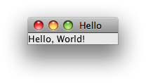
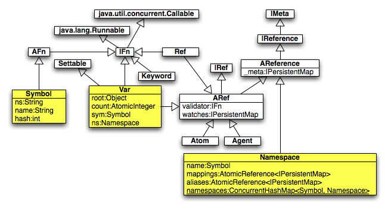
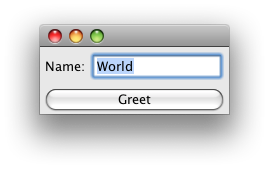
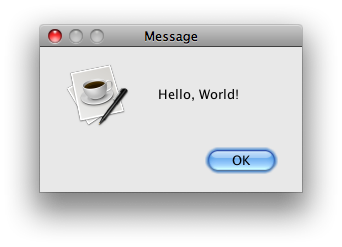
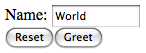
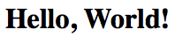

|
|
The goal of this article is to provide a fairly comprehensive introduction to the Clojure programming language. A large number of features are covered, each in a fairly brief manner. Feel free to skip around to the sections of most interest. The section names in the table of contents are hyperlinks to make this easier when reading on-line.
Please send feedback on errors and ways to improve explanations to mark@ociweb.com, or fork the repository and send a pull-request. I'm especially interested in feedback such as:
Updates to this article that indicate the "last updated" date and provide a dated list of changes will be provided at http://www.ociweb.com/mark/clojure/. Also see my article on software transactional memory and the Clojure implementation of it at http://www.ociweb.com/mark/stm/.
Code examples in this article often show the return value of a function call or its output in a line comment (begins with a semicolon) followed by "->" and the result. For example:
(+ 1 2) ; showing return value -> 3 (println "Hello") ; return value is nil, showing output -> Hello
Functional programming is a style of programming that emphasizes "first-class" functions that are "pure". It was inspired by ideas from the lambda calculus.
"Pure functions" are functions that always return the same result when passed the same arguments, as opposed to depending on state that can change with time. This makes them much easier to understand, debug and test. They have no side effects such as changing global state or performing any kind of I/O, including file I/O and database updates. State is maintained in the values of function parameters saved on the stack (often placed there by recursive calls) rather than in global variables saved on the heap. This allows functions to be executed repeatedly without affecting global state (an important characteristic to consider when transactions are discussed later). It also opens the door for smart compilers to improve performance by automatically reordering and parallelizing code, although the latter is not yet common.
In practice, applications need to have some side effects. Simon Peyton-Jones, a major contributor to the functional programming language Haskell, said the following: "In the end, any program must manipulate state. A program that has no side effects whatsoever is a kind of black box. All you can tell is that the box gets hotter." (http://www.youtube.com/watch?v=iSmkqocn0oQ&t=3m20s) The key is to limit side effects, clearly identify them, and avoid scattering them throughout the code.
Languages that support "first-class functions" allow functions to be held in variables, passed to other functions and returned from them. The ability to return a function supports selection of behavior to be executed later. Functions that accept other functions as arguments are called "higher-order functions". In a sense, their operation is configured by the functions that are passed to them. The functions passed in can be executed any number of times, including not at all.
Data in functional programming languages is typically immutable. This allows data to be accessed concurrently from multiple threads without locking. There's no need to lock data that can't be changed. With multicore processors becoming prevalent, this simplification of programming for concurrency is perhaps the biggest benefit of functional programming.
If all of this sounds intriguing and you're ready to try functional programming, be prepared for a sizable learning curve. Many claim that functional programming isn't more difficult than object-oriented programming, it's just different. Taking the time to learn this style of programming is a worthwhile investment in order to obtain the benefits described above.
Popular functional programming languages include Clojure, Common Lisp, Erlang, F#, Haskell, ML, OCaml, Scheme and Scala. Clojure and Scala were written to run on the Java Virtual Machine (JVM). Other functional programming languages that have implementations that run on the JVM include: Armed Bear Common Lisp (ABCL), OCaml-Java and Kawa (Scheme).
Clojure is a dynamically-typed, functional programming language that runs on the JVM (Java 5 or greater) and provides interoperability with Java. A major goal of the language is to make it easier to implement applications that access data from multiple threads (concurrency).
Clojure is pronounced the same as the word "closure". The creator of the language, Rich Hickey, explains the name this way: "I wanted to involve C (C#), L (Lisp) and J (Java). Once I came up with Clojure, given the pun on closure, the available domains and vast emptiness of the googlespace, it was an easy decision."
Clojure is also available for the .NET platform. ClojureCLR is an implementation of Clojure that runs on the Microsoft Common Language Runtime instead of the JVM. See https://github.com/clojure/clojure-clr.
In July 2011, ClojureScript was announced. It compiles Clojure code to JavaScript. See https://github.com/clojure/clojurescript.
Clojure is an open source language released under the Eclipse Public License v 1.0 (EPL). This is a very liberal license. See http://www.eclipse.org/legal/eplfaq.php for more information.
Running on the JVM provides portability, stability, performance and security. It also provides access to a wealth of existing Java libraries supporting functionality including file I/O, multithreading, database access, GUIs, web applications, and much more.
Each "operation" in Clojure is implemented as either a function, macro or special form. Nearly all functions and macros are implemented in Clojure source code. The differences between functions and macros are explained later. Special forms are recognized by the Clojure compiler and not implemented in Clojure source code. There are a relatively small number of special forms and new ones cannot be implemented. They include catch, def, do, dot ('.'), finally, fn, if, let, loop, monitor-enter, monitor-exit, new, quote, recur, set!, throw, try and var.
Clojure provides many functions that make it easy to operate on "sequences" which are logical views of collections. Many things can be treated as sequences. These include Java collections, Clojure-specific collections, strings, streams, directory structures and XML trees. New instances of Clojure collections can be created from existing ones in an efficient manner because they are persistent data structures.
Clojure provides three ways of safely sharing mutable data, all of which use mutable references to immutable data. Refs provide synchronous access to multiple pieces of shared data ("coordinated") by using Software Transactional Memory (STM). Atoms provide synchronous access to a single piece of shared data. Agents provide asynchronous access to a single piece of shared data. These are discussed in more detail in the "Reference Types" section.
Clojure is a
Lisp
dialect. However, it makes some departures from older Lisps.
For example, older Lisps use the car function to get
the first item in a list. Clojure calls this first
as does Common Lisp.
For a list of other differences, see
http://clojure.org/lisps.
Lisp has a syntax that many people love ... and many people hate, mainly due to its use of parentheses and prefix notation. If you tend toward the latter camp, consider these facts. Many text editors and IDEs highlight matching parentheses, so it isn't necessary to count them in order to ensure they are balanced. Clojure function calls are less noisy than Java method calls. A Java method call looks like this:
methodName(arg1, arg2, arg3);
A Clojure function call looks like this:
(function-name arg1 arg2 arg3)
The open paren moves to the front and the commas and semicolon disappear. This syntax is referred to as a "form". There is simple beauty in the fact that everything in Lisp has this form. Note that the naming convention in Clojure is to use all lowercase with hyphens separating words in multi-word names, unlike the Java convention of using camelcase.
Defining functions is similarly less noisy in Clojure.
The Clojure println function
adds a space between the output from each of its arguments.
To avoid this, pass the same arguments
to the str function and
pass its result to println .
// Java
public void hello(String name) {
System.out.println("Hello, " + name);
}
; Clojure
(defn hello [name]
(println "Hello," name))
Clojure makes heavy use of lazy evaluation. This allows functions to be invoked only when their result is needed. "Lazy sequences" are collections of results that are not computed until needed. This supports the efficient creation of infinite collections.
Clojure code is processed in three phases: read-time, compile-time and run-time. At read-time the Reader reads source code and converts it to a data structure, mostly a list of lists of lists. At compile-time this data structure is converted to Java bytecode. At run-time the bytecode is executed. Functions are only invoked at run-time. Macros are special constructs whose invocation looks similar to that of functions, but are expanded into new Clojure code at compile-time.
Is Clojure code hard to understand?
Imagine if every time you read Java source code and
encountered syntax elements like if statements,
for loops, and anonymous classes,
you had to pause and puzzle over what they mean.
There are certain things that must be obvious to
a person who wants to be a productive Java developer.
Likewise there are parts of Clojure syntax that must be obvious
for one to efficiently read and understand code.
Examples include being comfortable with the use of
let, apply, map,
filter, reduce
and anonymous functions ... all of which are described later.
Clojure code for your own library and application projects will
typically reside in its own directory (named after the project)
and will be managed by the
Leiningen
project management tool. Leiningen (or "lein" for short) will
take care of downloading Clojure for you and making it available
to your projects. To start using Clojure, you don't need to
install Clojure, nor deal with jar files or
the java command — just install and use
lein (instructions on the Leiningen homepage,
linked to above).
Once you've installed lein, create a trivial project to start playing around with:
cd ~/temp lein new my-proj cd my-proj lein repl # starts up the interactive REPL
To create a new application project, do
"lein new app my-app"
For more about getting started, see http://dev.clojure.org/display/doc/Getting+Started.
Lisp dialects have a very simple, some would say beautiful, syntax.
Data and code have the same representation, lists of lists
that can be represented in memory quite naturally as a tree.
(a b c) is a call to a function named a
with arguments b and c.
To make this data instead of code, the list needs to be quoted.
'(a b c) or (quote (a b c))
is a list of the values
a, b and c.
That's it except for some special cases.
The number of special cases there are depends on the dialect.
The special cases are seen by some as syntactic sugar. The more of them there are, the shorter certain kinds of code become and the more readers of the code have to learn and remember. It's a tricky balance. Many of them have an equivalent function name that can be used instead. I'll leave it to you to decide if Clojure has too much or too little syntactic sugar.
The table below briefly describes each of the special cases encountered in Clojure code. These will be described in more detail later. Don't try to understand everything in the table now.
| Purpose | Sugar | Function |
|---|---|---|
| comment |
; textfor line comments |
(comment text) macrofor block comments |
character literal (uses Java char type) |
\char
\tab\newline
\space\uunicode-hex-value
|
(char ascii-code)(char \uunicode)
|
string (uses Java String objects) |
"text"
|
(str char1 char2 ...)concatenates characters and many other kinds of values to create a string. |
| keyword; an interned string; keywords with the same name refer to the same object; often used for map keys |
:name
|
(keyword "name")
|
| keyword resolved in the current namespace |
::name
|
none |
| regular expression |
#"pattern"quoting rules differ from function form |
(re-pattern pattern)
|
| treated as whitespace; sometimes used in collections to aid readability |
, (a comma) |
N/A |
| list - a linked list |
'(items)doesn't evaluate items |
(list items)evaluates items |
| vector - similar to an array |
[items]
|
(vector items)
|
| set |
#{items}creates a hash set |
(hash-set items)(sorted-set items)
|
| map |
{key-value-pairs}creates a hash map |
(hash-map key-value-pairs)(sorted-map key-value-pairs)
|
| add metadata to a symbol or collection |
^{key-value-pairs} objectprocessed at read-time |
(with-meta object metadata-map)processed at run-time |
| get metadata map from a symbol or collection |
(meta object)
|
|
|
gather a variable number of arguments in a function parameter list |
& name
|
N/A |
| conventional name given to function parameters that aren't used |
_ (an underscore) |
N/A |
| construct a Java object; note the period after the class name |
(class-name. args)
|
(new class-name args)
|
| call a Java method |
(. class-or-instance method-name args) or (.method-name class-or-instance args)
|
none |
|
call several Java methods, threading the result
from each into the next as its first argument; each method can have additional arguments specified inside the parens; note the double period |
(.. class-or-object
(method1 args) (method2 args) ...)
|
none |
| create an anonymous function |
#(single-expression)use % (same as %1), %1,
%2 and so on for arguments
|
(fn [arg-names] expressions)
|
| dereference a Ref, Atom or Agent |
@ref
|
(deref ref)
|
get Var object instead ofthe value of a symbol (var-quote) |
#'name
|
(var name)
|
| syntax quote (used in macros) |
`
|
none |
| unquote (used in macros) |
~value
|
(unquote value)
|
| unquote splicing (used in macros) |
~@value
|
none |
| auto-gensym (used in macros to generate a unique symbol name) |
prefix#
|
(gensym prefix?)
|
Lisp dialects use prefix notation rather than
the typical infix notation used by most programming languages
for binary operators such as + and *.
For example, in Java one might write a + b + c,
whereas in a Lisp dialect this becomes (+ a b c).
One benefit of this notation is that any number of arguments
can be specified without repeating the operator.
Binary operators from other languages are Lisp functions
that aren't restricted to two operands.
One reason Lisp code contains more parentheses than code in other languages is that it also uses them where languages like Java use curly braces. For example, the statements in a Java method are inside curly braces, whereas the expressions in a Lisp function are inside the function definition which is surrounded by parentheses.
Compare the following snippets of Java and Clojure code that each define a simple function and invoke it. The output from both is "edray" and "orangeay".
// This is Java code.
public class PigLatin {
public static String pigLatin(String word) {
char firstLetter = word.charAt(0);
if ("aeiou".indexOf(firstLetter) != -1) return word + "ay";
return word.substring(1) + firstLetter + "ay";
}
public static void main(String args[]) {
System.out.println(pigLatin("red"));
System.out.println(pigLatin("orange"));
}
}
; This is Clojure code.
; When a set is used as a function, it returns the argument if it is
; in the set and nil otherwise. When used in a boolean context,
; that indicates whether the argument is in the set.
(def vowel? (set "aeiou"))
(defn pig-latin [word] ; defines a function
; word is expected to be a string
; which can be treated like a sequence of characters.
(let [first-letter (first word)] ; assigns a local binding
(if (vowel? first-letter)
(str word "ay") ; then part of if
(str (subs word 1) first-letter "ay")))) ; else part of if
(println (pig-latin "red"))
(println (pig-latin "orange"))
Clojure supports all the common data types such as booleans
(with literal values of true and false),
integers, decimals,
characters (see "character literal" in the table above) and strings.
It also supports ratios which retain a numerator and denominator
so numeric precision is not lost when they are used in calculations.
Symbols are used to name things.
These names are scoped in a namespace,
either one that is specified or the default namespace.
Symbols evaluate to their value.
To access the Symbol object itself, it must be quoted.
Keywords begin with a colon and are used as unique identifiers.
Examples include keys in maps and enumerated values
(such as :red, :green
and :blue).
It is possible in Clojure, as it is in any programming language,
to write code that is difficult to understand.
Following a few guidelines can make a big difference.
Write short, well-focused functions to make them
easier to read, test and reuse.
Use the "extract method" refactoring pattern often.
Deeply nested function calls can be hard to read.
Limit this nesting where possible,
often by using let to break
complicated expressions into several less complicated expressions.
Passing anonymous functions to named functions is common.
However, avoid passing anonymous functions
to other anonymous functions
because such code is difficult to read.
REPL stands for read-eval-print loop. This is a standard tool in Lisp dialects that allows a user to enter expressions, have them read and evaluated, and have their result printed. It is a very useful tool for testing and gaining an understanding of code.
To start a REPL, enter "lein repl" at a command prompt.
This will display a prompt of "user=>".
The part before "=>"
indicates the current default namespace.
Forms entered after this prompt are evaluated
and their result is output.
Here's a sample REPL session that shows both input and output.
user=> (def n 2) #'user/n user=> (* n 3) 6
def is a special form that
doesn't evaluate its first argument,
but instead uses the literal value as a name.
Its REPL output shows that a symbol named "n"
in the namespace "user" was defined.
To view documentation for a function, macro or namespace,
enter (doc name).
If it is a macro, the word "Macro" will appear on a line by itself
immediately after its parameter list.
The item for which documentation is being requested
must already be loaded (see the
require function).
For example:
(require 'clojure.string) (doc clojure.string/join) ; -> ; ------------------------- ; clojure.string/join ; ([coll] [separator coll]) ; Returns a string of all elements in coll, as returned by (seq coll), ; separated by an optional separator.
To find documentation on all functions/macros whose
name or documentation string contains a given string,
enter (find-doc "text").
To see the source for a function/macro,
enter (source name).
source is a macro defined in the
clojure.repl namespace
which is automatically loaded in the REPL environment.
To load and execute the forms in a source file,
enter (load-file "file-path").
Typically these files have a .clj extension.
To exit the REPL under Windows, type ctrl-z followed by the enter key or just ctrl-c. To exit the REPL on every other platform (including UNIX, Linux and Mac OS X), type ctrl-d.
Clojure provides bindings to Vars, which are containers bound to mutable storage locations. There are global bindings, thread-local bindings, bindings that are local to a function, and bindings that are local to a given form.
Function parameters are bound to Vars that are local to the function.
The def special form binds a value to a symbol. It provides a
mechanism to define metadata, :dynamic, which allows a thread-local value
within the scope of a binding call.
In other words, it allows re-definition of assigned value per execution thread
and scope. If the Var is not re-assigned to a new value in a separate
execution thread, the Var refers to the value of the root binding,
if accessed from another thread.
The let special form creates bindings to Vars
that are bound to the scope within the statement.
Its first argument is a vector containing name/expression pairs.
The expressions are evaluated in order and their results
are assigned to the names on their left.
These Vars can be used in the binding of other Vars declared within the vector.
The expressions following the Var declaration vector
contain the Var(s) that are executed only within the let scope.
Vars within functions that are called within let but
defined outside of that scope are not affected
by the declarations in the let's vector.
The binding macro
is similar to let,
but it gives new, thread-local values
to existing global bindings throughout the scope's
thread of execution.
The values of Vars bound within the let
vector argument are also used in functions, if they use
the same Var names, called from inside that scope.
When the execution thread leaves the binding macro's scope,
the global Var bindings revert to their previous values.
Starting in Clojure 1.3, binding can only do this for vars
declared :dynamic.
Vars intended to be bound to new, thread-local values
using binding have their own naming convention.
These symbols have names that
begin and end with an asterisk.
Examples that appear in this article include
*command-line-args*,
*agent*,
*err*,
*flush-on-newline*,
*in*,
*load-tests*,
*ns*,
*out*,
*print-length*,
*print-level* and
*stack-trace-depth*.
Functions that use these bindings are affected by their values.
For example, binding a new value to *out*
changes the output destination of
the println function.
The following code demonstrates usage of
def, defn, let, binding, and println.
(def ^:dynamic v 1) ; v is a global binding
(defn f1 []
(println "f1: v:" v))
(defn f2 []
(println "f2: before let v:" v)
; creates local binding v that shadows global one
(let [v 2]
; local binding only within this let statement
(println "f2: in let, v:" v)
(f1))
; outside of this let, v refers to global binding
(println "f2: after let v:" v))
(defn f3 []
(println "f3: before binding v:" v)
; same global binding with new, temporary value
(binding [v 3]
; global binding, new value
(println "f3: within binding function v: " v)
(f1)) ; calling f1 with new value to v
; outside of binding v refers to first global value
(println "f3: after binding v:" v))
(defn f4 []
(def v 4)) ; changes the value of v in the global scope
(println "(= v 1) => " (= v 1))
(println "Calling f2: ")
(f2)
(println)
(println "Calling f3: ")
(f3)
(println)
(println "Calling f4: ")
(f4)
(println "after calling f4, v =" v)
To run the code above, save it in a file named "vars.clj" and use the shell script for executing Clojure files described earlier as follows:
$ clj vars.clj
The output produced by the code above follows:
; (= v 1) => true Calling f2 f2: before let v: 1 f2: in let, v: 2 f1: v: 1 f2: after let v: 1 Calling f3 f3: before binding v: 1 f3: within binding function v: 3 f1: v: 3 f3: after binding v: 1 Calling f4 after calling f4, v: 4
Notice in the first call to f2, the let
function's binding to v did not change its originally
declared value, as is shown in the call to
f1 within the let statement.
The value of v in f1 is 1, not 2.
Next, inside f3 within the scope of the binding call,
the value of v was re-assigned within f1 since f1 was called within the
execution thread of binding call's scope. Once f3's
function execution thread exits from the binding call,
v is bound to the initially declared binding, 1.
When f4 is called, the binding of v is not within the context of a new execution thread so v is bound to the new value, 4, in the global scope. Remember that changing a global value is not necessarily a best practice. It is presented in f4's definition for demonstration purposes.
Clojure provides the collection types list, vector, set and map. Clojure can also use any of the Java collection classes, but this is not typically done because the Clojure variety are a much better fit for functional programming.
The Clojure collection types have characteristics that differ from Java's collection types. All of them are immutable, heterogeneous and persistent. Being immutable means that their contents cannot be changed. Being heterogeneous means that they can hold any kind of object. Being persistent means that old versions of them are preserved when new versions are created. Clojure does this in a very efficient manner where new versions share memory with old versions. For example, a new version of a map containing thousands of key/value pairs where just one value needs to be modified can be created quickly and consumes very little additional memory.
There are many core functions that operate on
all kinds of collections ... far too many to describe here.
A small subset of them are described next using vectors.
Keep in mind that since Clojure collections are immutable,
there are no functions that modify them.
Instead, there are many functions that use the magic of
persistent data structures
to efficiently create new collections from existing ones.
Also, some functions that operate on a collection (for example, a vector)
return a collection of a different type
(for example, a LazySeq)
that has different characteristics.
WARNING: This section presents information about Clojure collections that is important to learn. However, it drones on a bit, presenting function after function for operating on various types of collections. Should drowsiness set in, please skip ahead to the sections that follow and return to this section later.
The count function returns
the number of items in any collection.
For example:
(count [19 "yellow" true]) ; -> 3
The conj function, short for conjoin,
adds one or more items to a collection.
Where they are added depends on the type of the collection.
This is explained in the information on
specific collection types below.
The reverse function returns a sequence
of the items in the collection in reverse order.
(reverse [2 4 7]) ; -> (7 4 2)
The map function applies a given function
that takes one parameter to each item in a collection,
returning a lazy sequence of the results.
It can also apply functions that take more than one parameter
if a collection is supplied for each argument.
If those collections contain different numbers of items,
the items used from each will be those at the beginning
up to the number of items in the smallest collection.
For example:
; The next line uses an anonymous function that adds 3 to its argument. (map #(+ % 3) [2 4 7]) ; -> (5 7 10) (map + [2 4 7] [5 6] [1 2 3 4]) ; adds corresponding items -> (8 12)
The apply function returns
the result of a given function when
all the items in a given collection are used as arguments.
For example:
(apply + [2 4 7]); -> 13
There are many functions that retrieve a single item from a collection. For example:
(def stooges ["Moe" "Larry" "Curly" "Shemp"]) (first stooges) ; -> "Moe" (second stooges) ; -> "Larry" (last stooges) ; -> "Shemp" (nth stooges 2) ; indexes start at 0 -> "Curly"
There are many functions that retrieve several items from a collection. For example:
(next stooges) ; -> ("Larry" "Curly" "Shemp")
(butlast stooges) ; -> ("Moe" "Larry" "Curly")
(drop-last 2 stooges) ; -> ("Moe" "Larry")
; Get names containing more than three characters.
(filter #(> (count %) 3) stooges) ; -> ("Larry" "Curly" "Shemp")
(nthnext stooges 2) ; -> ("Curly" "Shemp")
There are several predicate functions that test the items in a collection and have a boolean result. These "short-circuit" so they only evaluate as many items as necessary to determine their result. For example:
(every? #(instance? String %) stooges) ; -> true (not-every? #(instance? String %) stooges) ; -> false (some #(instance? Number %) stooges) ; -> nil (not-any? #(instance? Number %) stooges) ; -> true
Lists are ordered collections of items.
They are ideal when new items will be
added to or removed from the front (constant-time).
They are not efficient (linear time)
for finding items by index (using nth)
and there is no efficient way to change items by index.
Here are some ways to create a list that all have the same result:
(def stooges (list "Moe" "Larry" "Curly"))
(def stooges (quote ("Moe" "Larry" "Curly")))
(def stooges '("Moe" "Larry" "Curly"))
The some function can be used to determine
if a collection contains a given item.
It takes a predicate function and a collection.
While it may seem tedious to need to specify a predicate function
in order to test for the existence of a single item,
it is somewhat intentional to discourage this usage.
Searching a list for a single item is a linear operation.
Using a set instead of a list is more efficient and easier.
Nevertheless, it can be done as follows:
(some #(= % "Moe") stooges) ; -> true (some #(= % "Mark") stooges) ; -> nil ; Another approach is to create a set from the list ; and then use the contains? function on the set as follows. (contains? (set stooges) "Moe") ; -> true
While the conj function will create a new
list, the cons function will create a new
sequence (more about that in the Sequences chapter). In each
case the new item(s) are added to the front.
The remove function creates a new list containing
only the items for which a predicate function returns false.
For example:
(def more-stooges (conj stooges "Shemp")) ; -> ("Shemp" "Moe" "Larry" "Curly")
(def less-stooges (remove #(= % "Curly") more-stooges)) ; -> ("Shemp" "Moe" "Larry")
The into function creates a new list
that contains all the items in two lists. For example:
(def kids-of-mike '("Greg" "Peter" "Bobby"))
(def kids-of-carol '("Marcia" "Jan" "Cindy"))
(def brady-bunch (into kids-of-mike kids-of-carol))
(println brady-bunch) ; -> (Cindy Jan Marcia Greg Peter Bobby)
The peek and pop functions
can be used to treat a list as a stack.
They operate on the beginning or head of the list.
Vectors are also ordered collections of items.
They are ideal when new items will be
added to or removed from the back (constant-time).
This means that using conj is more efficient
than cons for adding items.
They are efficient (constant time)
for finding (using nth)
or changing (using assoc) items by index.
Function definitions specify their parameter list using a vector.
Here are some ways to create a vector:
(def stooges (vector "Moe" "Larry" "Curly")) (def stooges ["Moe" "Larry" "Curly"])
Unless the list characteristic of being more efficient at
adding to or removing from the front is significant for a given use,
vectors are typically preferred over lists.
This is mainly due to the vector syntax of [...]
being a bit more appealing than the list syntax of '(...).
It doesn't have the possibility of being confused
with a call to a function, macro or special form.
The get function retrieves an item
from a vector by index.
As shown later, it also retrieves a value from a map by key.
Indexes start from zero.
The get function is similar to
the nth function.
Both take an optional value to be returned
if the index is out of range.
If this is not supplied and the index is out of range,
get returns nil
and nth throws an exception.
For example:
(get stooges 1 "unknown") ; -> "Larry" (get stooges 3 "unknown") ; -> "unknown"
The assoc function operates on vectors and maps.
When applied to a vector, it creates a new vector
where the item specified by an index is replaced.
If the index is equal to the number of items in the vector,
a new item is added to the end.
If it is greater than the number of items in the vector,
an IndexOutOfBoundsException is thrown.
For example:
(assoc stooges 2 "Shemp") ; -> ["Moe" "Larry" "Shemp"]
The subvec function returns a new vector that
is a subset of an existing one that retains the order of the items.
It takes a vector, a start index and an optional end index.
If the end index is omitted, the subset runs to the end.
The new vector shares the structure of the original one.
All the code examples provided above for lists also work for vectors.
The peek and pop functions
also work with vectors, but operate on the end or tail
rather than the beginning or head as they do for lists.
The conj function creates a new vector
that contains an additional item added to the back.
The cons function creates a new vector
that contains an additional item added to the front.
Sets are collections of unique items.
They are preferred over lists and vectors when
duplicates are not allowed and
items do not need to be maintained in the order in which they were added.
Clojure supports two kinds of sets, unsorted and sorted.
If the items being added to a sorted set can't be compared to each other,
a ClassCastException is thrown.
Here are some ways to create a set:
(def stooges (hash-set "Moe" "Larry" "Curly")) ; not sorted
(def stooges #{"Moe" "Larry" "Curly"}) ; same as previous
(def stooges (sorted-set "Moe" "Larry" "Curly"))
The contains? function operates on sets and maps.
When used on a set, it determines
whether the set contains a given item.
This is much simpler than using the some function
which is needed to test this with a list or vector.
For example:
(contains? stooges "Moe") ; -> true (contains? stooges "Mark") ; -> false
Sets can be used as functions of their items. When used in this way, they return the item or nil. This provides an even more compact way to test whether a set contains a given item. For example:
(stooges "Moe") ; -> "Moe" (stooges "Mark") ; -> nil (println (if (stooges person) "stooge" "regular person"))
The conj and into functions
demonstrated above with lists also work with sets.
The location where the items are added is only defined for sorted sets.
The disj function creates a new set
where one or more items are removed.
For example:
(def more-stooges (conj stooges "Shemp")) ; -> #{"Moe" "Larry" "Curly" "Shemp"}
(def less-stooges (disj more-stooges "Curly")) ; -> #{"Moe" "Larry" "Shemp"}
Also consider the functions in the clojure.set namespace
which include:
difference, index,
intersection, join,
map-invert, project,
rename, rename-keys,
select and union.
Some of these functions operate on maps instead of sets.
Maps store associations between keys and their corresponding values where both can be any kind of object. Often keywords are used for map keys. Entries can be stored in such a way that the pairs can be quickly retrieved in sorted order based on their keys.
Here are some ways to create maps that store associations from popsicle colors to their flavors where the keys and values are both keywords. The commas aid readability. They are optional and are treated as whitespace.
(def popsicle-map
(hash-map :red :cherry, :green :apple, :purple :grape))
(def popsicle-map
{:red :cherry, :green :apple, :purple :grape}) ; same as previous
(def popsicle-map
(sorted-map :red :cherry, :green :apple, :purple :grape))
Maps can be used as functions of their keys.
Also, in some cases keys can be used as functions of maps.
For example, keyword keys can, but string and integer keys cannot.
The following are all valid ways to get
the flavor of green popsicles, which is :apple:
(get popsicle-map :green) (popsicle-map :green) (:green popsicle-map)
The contains? function operates on sets and maps.
When used on a map, it determines
whether the map contains a given key.
The keys function returns a sequence containing
all the keys in a given map.
The vals function returns a sequence containing
all the values in a given map.
For example:
(contains? popsicle-map :green) ; -> true (keys popsicle-map) ; -> (:red :green :purple) (vals popsicle-map) ; -> (:cherry :apple :grape)
The assoc function operates on maps and vectors.
When applied to a map, it creates a new map
where any number of key/value pairs are added.
Values for existing keys are replaced by new values.
For example:
(assoc popsicle-map :green :lime :blue :blueberry)
; -> {:blue :blueberry, :green :lime, :purple :grape, :red :cherry}
The dissoc function takes a map and any number of keys.
It returns a new map where those keys are removed.
Specified keys that aren't in the map are ignored.
For example:
(dissoc popsicle-map :green :blue) ; -> {:purple :grape, :red :cherry}
When used in the context of a sequence, maps are treated like
a sequence of clojure.lang.MapEntry objects.
This can be combined with the use of
doseq and
destructuring,
both of which are described in more detail later,
to easily iterate through all the keys and values.
The following example iterates through
all the key/value pairs in popsicle-map
and binds the key to color
and the value to flavor.
The name function returns the string name of a keyword.
(doseq [[color flavor] popsicle-map]
(println (str "The flavor of " (name color)
" popsicles is " (name flavor) ".")))
The output produced by the code above follows:
The flavor of green popsicles is apple. The flavor of purple popsicles is grape. The flavor of red popsicles is cherry.
The select-keys function takes a map and a sequence of keys.
It returns a new map where only those keys are in the map.
Specified keys that aren't in the map are ignored.
For example:
(select-keys popsicle-map [:red :green :blue]) ; -> {:green :apple, :red :cherry}
The conj function adds all the key/value pairs
from one map to another.
If any keys in the source map already exist in the target map,
the target map values are replaced by the corresponding source map values.
Values in maps can be maps, and they can be nested to any depth. Retrieving nested values is easy. Likewise, creating new maps where nested values are modified is easy.
To demonstrate this we'll create a map that describes a person. It has a key whose value describes their address using a map. It also has a key whose value describes their employer which has its own address map.
(def person {
:name "Mark Volkmann"
:address {
:street "644 Glen Summit"
:city "St. Charles"
:state "Missouri"
:zip 63304}
:employer {
:name "Object Computing, Inc."
:address {
:street "12140 Woodcrest Executive Drive, Suite 250"
:city "Creve Coeur"
:state "Missouri"
:zip 63141}}})
The get-in function takes a map and a key sequence.
It returns the value of the nested map key at the end of the sequence.
The -> macro and the reduce function
can also be used for this purpose.
All of these are demonstrated below
to retrieve the employer city which is "Creve Coeur".
(get-in person [:employer :address :city]) (-> person :employer :address :city) ; explained below (reduce get person [:employer :address :city]) ; explained below
The -> macro, referred to as the "thread" macro,
calls a series of functions,
passing the result of each as an argument to the next.
For example the following lines have the same result:
(f1 (f2 (f3 x))) (-> x f3 f2 f1)
There is also a -?> macro
in the clojure.core.incubator namespace that
stops and returns nil if any function in the chain returns nil.
This avoids getting a NullPointerException.
The reduce function
takes a function of two arguments,
an optional value and a collection.
It begins by calling the function with either
the value and the first item in the collection
or the first two items in the collection if the value is omitted.
It then calls the function repeatedly
with the previous function result
and the next item in the collection
until every item in the collection has been processed.
This function is the same as inject in Ruby
and foldl in Haskell.
The assoc-in function takes a map, a key sequence
and a new value.
It returns a new map where the nested map key
at the end of the sequence has the new value.
For example, a new map where the employer city
is changed to "Clayton" can be created as follows:
(assoc-in person [:employer :address :city] "Clayton")
The update-in function takes a map, a key sequence,
a function and any number of additional arguments.
The function is passed the old value of the key
at the end of the sequence and the additional arguments.
The value it returns is used as the new value of that key.
For example, a new map where the employer zip code is
changed to a string in the U.S. "ZIP + 4" format
can be created using as follows:
(update-in person [:employer :address :zip] str "-1234") ; using the str function
Note: StructMaps have been deprecated. Records are generally recommended instead. A section on Records will be added shortly.
StructMaps are similar to regular maps, but are optimized
to take advantage of common keys in multiple instances
so they don't have to be repeated.
Their use is similar to that of Java Beans.
Proper equals and hashCode methods
are generated for them.
Accessor functions that are faster than ordinary map key lookups
can easily be created.
The create-struct function
and defstruct macro,
which uses create-struct,
both define StructMaps.
The keys are normally specified with keywords.
For example:
(def vehicle-struct (create-struct :make :model :year :color)) ; long way (defstruct vehicle-struct :make :model :year :color) ; short way
The struct function creates
an instance of a given StructMap.
Values must be specified in the same order as their
corresponding keys were specified when the StructMap was defined.
Values for keys at the end can be omitted
and their values will be nil.
For example:
(def vehicle (struct vehicle-struct "Toyota" "Prius" 2009))
The accessor function creates a function for
accessing the value of a given key in instances
that avoids performing a hash map lookup.
For example:
; Note the use of def instead of defn because accessor returns ; a function that is then bound to "make". (def make (accessor vehicle-struct :make)) (make vehicle) ; -> "Toyota" (vehicle :make) ; same but slower (:make vehicle) ; same but slower
New keys not specified when the StructMap was defined can be added to instances. However, keys specified when the StructMap was defined cannot be removed from instances.
The defn macro defines a function.
Its arguments are the function name,
an optional documentation string
(displayed by the doc macro),
the parameter list (specified with a vector that can be empty)
and the function body.
The result of the last expression in the body is returned.
Every function returns a value, but it may be nil.
For example:
(defn parting "returns a String parting" [name] (str "Goodbye, " name)) ; concatenation (println (parting "Mark")) ; -> Goodbye, Mark
Function definitions must appear before their first use.
Sometimes this isn't possible due to
a set of functions that invoke each other.
The declare special form
takes any number of function names and
creates forward declarations that resolve these cases. For example:
(declare function-names)
Functions defined with the defn- macro are private.
This means they are only visible in the namespace
in which they are defined.
Other macros that produce private definitions,
such as defmacro-,
are in clojure.core.incubator.
Functions can take a variable number of parameters. Optional parameters must appear at the end. They are gathered into a list by adding an ampersand and a name for the list at the end of the parameter list.
(defn power [base & exponents] ; Using java.lang.Math static method pow. (reduce #(Math/pow %1 %2) base exponents)) (power 2 3 4) ; 2 to the 3rd = 8; 8 to the 4th = 4096
Function definitions can contain more than one parameter list and corresponding body. Each parameter list must contain a different number of parameters. This supports overloading functions based on arity. Often it is useful for a body to call the same function with a different number of arguments in order to provide default values for some of them. For example:
(defn parting
"returns a String parting in a given language"
([] (parting "World"))
([name] (parting name "en"))
([name language]
; condp is similar to a case statement in other languages.
; It is described in more detail later.
; It is used here to take different actions based on whether the
; parameter "language" is set to "en", "es" or something else.
(condp = language
"en" (str "Goodbye, " name)
"es" (str "Adios, " name)
(throw (IllegalArgumentException.
(str "unsupported language " language))))))
(println (parting)) ; -> Goodbye, World
(println (parting "Mark")) ; -> Goodbye, Mark
(println (parting "Mark" "es")) ; -> Adios, Mark
(println (parting "Mark", "xy"))
; -> java.lang.IllegalArgumentException: unsupported language xy
Anonymous functions have no name. These are often passed as arguments to a named function. They are handy for short function definitions that are only used in one place. There are two ways to define them, shown below:
(def years [1940 1944 1961 1985 1987]) (filter (fn [year] (even? year)) years) ; long way w/ named arguments -> (1940 1944) (filter #(even? %) years) ; short way where % refers to the argument
When an anonymous function is defined
using the fn special form,
the body can contain any number of expressions.
It can also have a name (following "fn") which makes it
no longer anonymous and enables it to call itself recursively.
When an anonymous function is defined in the short way
using #(...),
it can only contain a single expression.
To use more than one expression,
wrap them in the do special form.
If there is only one parameter, it can be referred to with %.
If there are multiple parameters, they are referred to with
%1, %2 and so on.
For example:
(defn pair-test [test-fn n1 n2] (if (test-fn n1 n2) "pass" "fail")) ; Use a test-fn that determines whether ; the sum of its two arguments is an even number. (println (pair-test #(even? (+ %1 %2)) 3 5)) ; -> pass
Java methods can be overloaded based on parameter types. Clojure functions can only be overloaded on arity. Clojure multimethods however, can be overloaded based on anything.
The defmulti and defmethod macros
are used together to define a multimethod.
The arguments to defmulti are
the method name and the dispatch function
which returns a value that will be used to select a method.
The arguments to defmethod are the method name,
the dispatch value that triggers use of the method,
the parameter list and the body.
The special dispatch value :default is used to
designate a method to be used when none of the others match.
Each defmethod for the same multimethod name
must take the same number of arguments.
The arguments passed to a multimethod
are passed to the dispatch function.
Here's an example of a multimethod that overloads based on type.
(defmulti what-am-i class) ; class is the dispatch function (defmethod what-am-i Number [arg] (println arg "is a Number")) (defmethod what-am-i String [arg] (println arg "is a String")) (defmethod what-am-i :default [arg] (println arg "is something else")) (what-am-i 19) ; -> 19 is a Number (what-am-i "Hello") ; -> Hello is a String (what-am-i true) ; -> true is something else
Since the dispatch function can be any function,
including one you write, the possibilities are endless.
For example, a custom dispatch function could examine its arguments
and return a keyword to indicate a size such as
:small, :medium or :large.
One method for each size keyword can provide logic
that is specific to a given size.
Underscores can be used as placeholders for function parameters that won't be used and therefore don't need a name. This is often useful in callback functions which are passed to another function so they can be invoked later. A particular callback function may not use all the arguments that are passed to it. For example:
(defn callback1 [n1 n2 n3] (+ n1 n2 n3)) ; uses all three arguments (defn callback2 [n1 _ n3] (+ n1 n3)) ; only uses 1st & 3rd arguments (defn caller [callback value] (callback (+ value 1) (+ value 2) (+ value 3))) (caller callback1 10) ; 11 + 12 + 13 -> 36 (caller callback2 10) ; 11 + 13 -> 24
The complement function returns a new function
that is just like a given function,
but returns the opposite logical truth value.
For example:
(defn teenager? [age] (and (>= age 13) (< age 20))) (def non-teen? (complement teenager?)) (println (non-teen? 47)) ; -> true
The comp function composes a new function
by combining any number of existing ones.
They are called from right to left.
For example:
(defn times2 [n] (* n 2)) (defn minus3 [n] (- n 3)) ; Note the use of def instead of defn because comp returns ; a function that is then bound to "my-composition". (def my-composition (comp minus3 times2)) (my-composition 4) ; 4*2 - 3 -> 5
The partial function creates a new function
from an existing one
so that it provides fixed values for initial parameters
and calls the original function.
This is called a "partial application".
For example, * is a function that
takes any number of arguments and multiplies them together.
Suppose we want a new version of that function
that always multiplies by two.
; Note the use of def instead of defn because partial returns ; a function that is then bound to "times2". (def times2 (partial * 2)) (times2 3 4) ; 2 * 3 * 4 -> 24
Here's an interesting use of both
the map and partial functions.
We'll define functions that use the map function
to compute the value of an arbitrary polynomial
and its derivative for given x values.
The polynomials are described by a vector of their coefficients.
Next, we'll define functions that use partial
to define functions for a specific polynomial and its derivative.
Finally, we'll demonstrate using the functions.
The range function returns a lazy sequence of integers
from an inclusive lower bound to an exclusive upper bound.
The lower bound defaults to 0, the step size defaults to 1,
and the upper bound defaults to infinity.
(defn- polynomial
"computes the value of a polynomial
with the given coefficients for a given value x"
[coefs x]
; For example, if coefs contains 3 values then exponents is (2 1 0).
(let [exponents (reverse (range (count coefs)))]
; Multiply each coefficient by x raised to the corresponding exponent
; and sum those results.
; coefs go into %1 and exponents go into %2.
(apply + (map #(* %1 (Math/pow x %2)) coefs exponents))))
(defn- derivative
"computes the value of the derivative of a polynomial
with the given coefficients for a given value x"
[coefs x]
; The coefficients of the derivative function are obtained by
; multiplying all but the last coefficient by its corresponding exponent.
; The extra exponent will be ignored.
(let [exponents (reverse (range (count coefs)))
derivative-coefs (map #(* %1 %2) (butlast coefs) exponents)]
(polynomial derivative-coefs x)))
(def f (partial polynomial [2 1 3])) ; 2x^2 + x + 3
(def f-prime (partial derivative [2 1 3])) ; 4x + 1
(println "f(2) =" (f 2)) ; -> 13.0
(println "f'(2) =" (f-prime 2)) ; -> 9.0
Here's an another way that the polynomial function
could be implemented (suggested by Francesco Strino).
For a polynomial with coefficients a, b and c,
it computes the value for x as follows:
%1 = a, %2 = b, result is ax + b
%1 = ax + b, %2 = c, result is (ax + b)x + c = ax^2 + bx + c
(defn- polynomial "computes the value of a polynomial with the given coefficients for a given value x" [coefs x] (reduce #(+ (* x %1) %2) coefs))
The memoize function takes another function
and returns a new function that
stores a mapping from previous arguments to
previous results for the given function.
The new function uses the mapping to avoid invoking the given function
with arguments that have already been evaluated.
This results in better performance,
but also requires memory to store the mappings.
The time macro evaluates an expression,
prints the elapsed time, and returns the expression result.
It is used in the following code to measure the time
to compute the value of a polynomial at a given x value.
The following example demonstrates memoizing a polynomial function:
; Note the use of def instead of defn because memoize returns ; a function that is then bound to "memo-f". (def memo-f (memoize f)) (println "priming call") (time (f 2)) (println "without memoization") ; Note the use of an underscore for the binding that isn't used. (dotimes [_ 3] (time (f 2))) (println "with memoization") (dotimes [_ 3] (time (memo-f 2)))
The output produced by this code from a sample run is shown below.
priming call "Elapsed time: 4.128 msecs" without memoization "Elapsed time: 0.172 msecs" "Elapsed time: 0.365 msecs" "Elapsed time: 0.19 msecs" with memoization "Elapsed time: 0.241 msecs" "Elapsed time: 0.033 msecs" "Elapsed time: 0.019 msecs"
There are several observations than can be made from this output.
The first call to the function f, the "priming call",
takes considerably longer than the other calls.
This is true regardless of whether memoization is used.
The first call to the memoized function takes longer than
the first non-priming call to the original function,
due to the overhead of caching its result.
Subsequent calls to the memoized function are much faster.
Clojure programs can use all Java classes and interfaces.
As in Java, classes in the java.lang package
can be used without importing them.
Java classes in other packages can be used by either
specifying their package when referencing them or
using the import function.
For example:
(import '(java.util Calendar GregorianCalendar) '(javax.swing JFrame JLabel))
Also see the
:import
directive
of the ns macro which is described later.
There are two ways to access constants in a Java class, shown in the examples below:
(. java.util.Calendar APRIL) ; -> 3 (. Calendar APRIL) ; works if the Calendar class was imported java.util.Calendar/APRIL Calendar/APRIL ; works if the Calendar class was imported
Invoking Java methods from Clojure code is very easy.
Because of this, Clojure doesn't provide functions for
many common operations and instead relies on Java methods.
For example, Clojure doesn't provide a function to find
the absolute value of a floating point number
because the abs method of the Java class
java.lang.Math class already does that.
On the other hand, while that class provides the method max
to find the largest of two values, it only works with two values,
so Clojure provides the max function
which takes one or more values.
There are two ways to invoke a static method in a Java class, shown in the examples below:
(. Math pow 2 4) ; -> 16.0 (Math/pow 2 4)
There are two ways to invoke a constructor to create a Java object,
shown in the examples below.
Note the use of the def special form
to retain a reference to the new object in a global binding.
This is not required.
A reference could be retained in several other ways
such as adding it to a collection or passing it to a function.
(import '(java.util Calendar GregorianCalendar)) (def calendar (new GregorianCalendar 2008 Calendar/APRIL 16)) ; April 16, 2008 (def calendar (GregorianCalendar. 2008 Calendar/APRIL 16))
There are two ways to invoke an instance method on a Java object, shown in the examples below:
(. calendar add Calendar/MONTH 2) (. calendar get Calendar/MONTH) ; -> 5 (.add calendar Calendar/MONTH 2) (.get calendar Calendar/MONTH) ; -> 7
The option in the examples above where the method name appears first is generally preferred. The option where the object appears first is easier to use inside macro definitions because syntax quoting can be used instead of string concatenation. This statement will make more sense after reading the "Macros" section ahead.
Method calls can be chained using the .. macro.
The result from the previous method call in the chain
becomes the target of the next method call. For example:
(. (. calendar getTimeZone) getDisplayName) ; long way (.. calendar getTimeZone getDisplayName) ; -> "Central Standard Time"
There is also a .?. macro
in the clojure.core.incubator namespace that
stops and returns nil if any method in the chain returns null.
This avoids getting a NullPointerException.
The doto macro is used to
invoke many methods on the same object.
It returns the value of its first argument which is the target object.
This makes it convenient to create the target object
with an expression that is the first argument
(see the creation of a JFrame GUI object
in the "Namespaces" section ahead).
For example:
(doto calendar (.set Calendar/YEAR 1981) (.set Calendar/MONTH Calendar/AUGUST) (.set Calendar/DATE 1)) (def formatter (java.text.DateFormat/getDateInstance)) (.format formatter (.getTime calendar)) ; -> "Aug 1, 1981"
The memfn macro expands to code that allows
a Java method to be treated as a first class function.
It is an alternative to using an anonymous function
for calling a Java method.
When using memfn to invoke Java methods that take arguments,
a name for each argument must be specified.
This indicates the arity of the method to be invoked.
These names are arbitrary, but they must be unique
because they are used in the generated code.
The following examples apply an instance method
(substring)
to a Java object from the first collection
(a String),
passing the corresponding item from the second collection
(an int)
as an argument:
(println (map #(.substring %1 %2)
["Moe" "Larry" "Curly"] [1 2 3])) ; -> (oe rry ly)
(println (map (memfn substring beginIndex)
["Moe" "Larry" "Curly"] [1 2 3])) ; -> same
The proxy macro expands to code that creates a Java object
that extends a given Java class and/or
implements zero or more Java interfaces.
This is often needed to implement callback methods in
listener objects that must implement a certain interface
in order to register for notifications from another object.
For an example, see the
"Desktop Applications" section
near the end of this article.
It creates an object that extends the JFrame GUI class
and implements the ActionListener interface.
All Clojure functions implement both the
java.lang.Runnable
interface and the
java.util.concurrent.Callable
interface.
This makes it easy to execute them in new Java threads.
For example:
(defn delayed-print [ms text] (Thread/sleep ms) (println text)) ; Pass an anonymous function that invokes delayed-print ; to the Thread constructor so the delayed-print function ; executes inside the Thread instead of ; while the Thread object is being created. (.start (Thread. #(delayed-print 1000 ", World!"))) ; prints 2nd (print "Hello") ; prints 1st ; output is "Hello, World!"
All exceptions thrown by Clojure code are runtime exceptions.
Java methods invoked from Clojure code
can still throw checked exceptions.
The try, catch,
finally and throw
special forms provide functionality similar to
their Java counterparts.
For example:
(defn collection? [obj]
(println "obj is a" (class obj))
; Clojure collections implement clojure.lang.IPersistentCollection.
(or (coll? obj) ; Clojure collection?
(instance? java.util.Collection obj))) ; Java collection?
(defn average [coll]
(when-not (collection? coll)
(throw (IllegalArgumentException. "expected a collection")))
(when (empty? coll)
(throw (IllegalArgumentException. "collection is empty")))
; Apply the + function to all the items in coll,
; then divide by the number of items in it.
(let [sum (apply + coll)]
(/ sum (count coll))))
(try
(println "list average =" (average '(2 3))) ; result is a clojure.lang.Ratio object
(println "vector average =" (average [2 3])) ; same
(println "set average =" (average #{2 3})) ; same
(let [al (java.util.ArrayList.)]
(doto al (.add 2) (.add 3))
(println "ArrayList average =" (average al))) ; same
(println "string average =" (average "1 2 3 4")) ; illegal argument
(catch IllegalArgumentException e
(println e)
;(.printStackTrace e) ; if a stack trace is desired
)
(finally
(println "in finally")))
The output produced by the code above follows:
obj is a clojure.lang.PersistentList list average = 5/2 obj is a clojure.lang.LazilyPersistentVector vector average = 5/2 obj is a clojure.lang.PersistentHashSet set average = 5/2 obj is a java.util.ArrayList ArrayList average = 5/2 obj is a java.lang.String #<IllegalArgumentException java.lang.IllegalArgumentException: expected a collection> in finally
The if special form tests a condition and
executes one of two expressions based on
whether the condition evaluates to true.
Its syntax is
(if condition then-expr else-expr).
The else expression is optional.
If more than one expression is needed for the then or else part,
use the do special form
to wrap them in a single expression.
For example:
(import '(java.util Calendar GregorianCalendar))
(let [gc (GregorianCalendar.)
day-of-week (.get gc Calendar/DAY_OF_WEEK)
is-weekend (or (= day-of-week Calendar/SATURDAY) (= day-of-week Calendar/SUNDAY))]
(if is-weekend
(println "play")
(do (println "work")
(println "sleep"))))
The when and when-not macros
provide alternatives to if
when only one branch is needed.
Any number of body expressions can be supplied
without wrapping them in a do.
For example:
(when is-weekend (println "play")) (when-not is-weekend (println "work") (println "sleep"))
The if-let macro binds a value to a single binding
and chooses an expression to evaluate based on
whether the value is logically true or false
(explained in the "Predicates" section).
The following code prints the name of the first person
waiting in line or prints "no waiting" if the line is empty.
(defn process-next [waiting-line]
(if-let [name (first waiting-line)]
(println name "is next")
(println "no waiting")))
(process-next '("Jeremy" "Amanda" "Tami")) ; -> Jeremy is next
(process-next '()) ; -> no waiting
The when-let macro is similar to
the if-let macro, but it differs
in the same way that if differs from when.
It doesn't support an else part and
the then part can contain any number of expressions.
For example:
(defn summarize
"prints the first item in a collection
followed by a period for each remaining item"
[coll]
; Execute the when-let body only if the collection isn't empty.
(when-let [head (first coll)]
(print head)
; Below, dec subtracts one (decrements) from
; the number of items in the collection.
(dotimes [_ (dec (count coll))] (print \.))
(println)))
(summarize ["Moe" "Larry" "Curly"]) ; -> Moe..
(summarize []) ; -> no output
The condp macro is similar to
a case statement in other languages.
It takes a two parameter predicate
(often = or instance?)
and an expression to act as its second argument.
After those it takes any number of value/result expression pairs
that are evaluated in order.
If the predicate evaluates to true
when one of the values is used as its first argument
then the corresponding result is returned.
An optional final argument specifies the result to be returned
if no given value causes the predicate to evaluate to true.
If this is omitted and no given value causes
the predicate to evaluate to true
then an IllegalArgumentException is thrown.
The following example prompts the user to enter a number
and prints the name of that number only for 1, 2 and 3.
Otherwise, it prints "unexpected value".
After that, it examines the type of the local binding "value".
If it is a Number,
it prints the number times two.
If it is a String,
it prints the length of the string times two.
(print "Enter a number: ") (flush) ; stays in a buffer otherwise
(let [reader (java.io.BufferedReader. *in*) ; stdin
line (.readLine reader)
value (try
(Integer/parseInt line)
(catch NumberFormatException e line))] ; use string value if not integer
(println
(condp = value
1 "one"
2 "two"
3 "three"
(str "unexpected value, \"" value \")))
(println
(condp instance? value
Number (* value 2)
String (* (count value) 2))))
The cond macro takes
any number of predicate/result expression pairs.
It evaluates the predicates in order until one evaluates to true
and then returns the corresponding result.
If none evaluate to true
then an IllegalArgumentException is thrown.
Often the predicate in the last pair is simply true
to handle all remaining cases.
The following example prompts the user to enter a water temperature. It then prints whether the water is freezing, boiling or neither.
(print "Enter water temperature in Celsius: ") (flush)
(let [reader (java.io.BufferedReader. *in*)
line (.readLine reader)
temperature (try
(Float/parseFloat line)
(catch NumberFormatException e line))] ; use string value if not float
(println
(cond
(instance? String temperature) "invalid temperature"
(<= temperature 0) "freezing"
(>= temperature 100) "boiling"
true "neither")))
There are many ways to "loop" or iterate through items in a sequence.
The dotimes macro executes the expressions in its body
a given number of times, assigning values from zero to
one less than that number to a specified local binding.
If the binding isn't needed
(card-number in the example below),
an underscore can be used as its placeholder.
For example:
(dotimes [card-number 3] (println "deal card number" (inc card-number))) ; adds one to card-number
Note that the inc function is used so that
the values 1, 2 and 3 are output instead of 0, 1 and 2.
The code above produces the following output:
deal card number 1 deal card number 2 deal card number 3
The while macro executes the expressions in its body
while a test expression evaluates to true.
The following example executes the while body
while a given thread is still running:
(defn my-fn [ms]
(println "entered my-fn")
(Thread/sleep ms)
(println "leaving my-fn"))
(let [thread (Thread. #(my-fn 1))]
(.start thread)
(println "started thread")
(while (.isAlive thread)
(print ".")
(flush))
(println "thread stopped"))
The output from the code above will be similar to the following:
started thread .....entered my-fn. .............leaving my-fn. thread stopped
The for and doseq macros
perform list comprehension.
They support iterating through multiple collections
(rightmost collection fastest)
and optional filtering
using :when and :while expressions.
The for macro takes a single expression body
and returns a lazy sequence of the results.
The doseq macro takes a body containing
any number of expressions, executes them for their side effects,
and returns nil.
The following examples both output names of some spreadsheet cells
working down rows and then across columns.
They skip the "B" column and only use rows that are less than 3.
Note how the dorun function,
described later in the "Sequences" section,
is used to force evaluation of the lazy sequence
returned by the for macro.
(def cols "ABCD")
(def rows (range 1 4)) ; purposely larger than needed to demonstrate :while
(println "for demo")
(dorun
(for [col cols :when (not= col \B)
row rows :while (< row 3)]
(println (str col row))))
(println "\ndoseq demo")
(doseq [col cols :when (not= col \B)
row rows :while (< row 3)]
(println (str col row)))
The code above produces the following output:
for demo A1 A2 C1 C2 D1 D2 doseq demo A1 A2 C1 C2 D1 D2
The loop special form, as its name suggests,
supports looping. It and its companion special form
recur are described in the next section.
Recursion occurs when a function invokes itself either directly
or indirectly through another function that it calls.
Common ways in which recursion is terminated include
checking for a collection of items to become empty
or checking for a number to reach a specific value such as zero.
The former case is often implemented by successively using
the next function to process all but the first item.
The latter case is often implemented by
decrementing a number with the dec function.
Recursive calls can result in running out of memory
if the call stack becomes too deep.
Some programming languages address this by supporting
"tail call optimization" (TCO).
Java doesn't currently support TCO and neither does Clojure.
One way to avoid this issue in Clojure is to use the
loop and recur special forms.
Another way is to use the
trampoline
function.
The loop/recur idiom
turns what looks like a recursive call
into a loop that doesn't consume stack space.
The loop special form is
like the let special form
in that they both establish local bindings,
but it also establishes a recursion point
that is the target of calls to recur.
The bindings specified by loop
provide initial values for the local bindings.
Calls to recur cause control to
return to the loop and
assign new values to its local bindings.
The number of arguments passed to recur
must match the number of bindings in the loop.
Also, recur can only appear
as the last call in the loop.
(defn factorial-1 [number]
"computes the factorial of a positive integer
in a way that doesn't consume stack space"
(loop [n number factorial 1]
(if (zero? n)
factorial
(recur (dec n) (* factorial n)))))
(println (time (factorial-1 5))) ; -> "Elapsed time: 0.071 msecs"\n120
The defn macro,
like the loop special form,
establishes a recursion point.
The recur special form can also be used
as the last call in a function to
return to the beginning of that function with new arguments.
Another way to implement the factorial function
is to use the reduce function.
This was described back in the
"Collections" section.
It supports a more functional, less imperative style.
Unfortunately, in this case, it is less efficient.
Note that the range function takes
a lower bound that is inclusive and
an upper bound that is exclusive.
(defn factorial-2 [number] (reduce * (range 2 (inc number)))) (println (time (factorial-2 5))) ; -> "Elapsed time: 0.335 msecs"\n120
The same result can be obtained by replacing reduce
with apply, but that takes even longer.
This illustrates the importance of understanding
the characteristics of functions when choosing between them.
The recur special form
isn't suitable for mutual recursion
where a function calls another function
which calls back to the original function.
The
trampoline
function, not covered here, does support mutual recursion.
Clojure provides many functions that act as predicates,
used to test a condition.
They return a value that can be interpreted as true or false.
The values false and nil
are interpreted as false.
The value true and every other value, including zero,
are interpreted as true.
Predicate functions usually have a name that ends in a question mark.
Reflection involves obtaining information about an object
other than its value, such as its type.
There are many predicate functions that perform reflection.
Predicate functions that test the type of a single object include
class?, coll?, decimal?,
delay?, float?, fn?,
instance?, integer?, isa?,
keyword?, list?,
macro?, map?, number?,
seq?, set?, string?
and vector?.
Some non-predicate functions that perform reflection include
ancestors, bases, class,
ns-publics and parents.
Predicate functions that test relationships between values include
<, <=, =,
not=, ==, >,
>=, compare, distinct?
and identical?.
Predicate functions that test logical relationships include
and, or, not,
true?, false? and nil?
Predicate functions that test sequences,
most of which were discussed earlier, include
empty?, not-empty,
every?, not-every?,
some and not-any?.
Predicate functions that test numbers include
even?, neg?, odd?,
pos? and zero?.
Sequences are logical views of collections. Many things can be treated as sequences. These include Java collections, Clojure-specific collections, strings, streams, directory structures and XML trees.
Many Clojure functions return a lazy sequence.
This is a sequence whose items can be the result of function calls
that aren't evaluated until they are needed.
A benefit of creating a lazy sequence is that it isn't
necessary to anticipate how many items in it will
actually be used at the time the sequence is created.
Examples of functions and macros that return lazy sequences include:
cache-seq, concat, cycle,
distinct, drop, drop-last,
drop-while, filter, for,
interleave, interpose,
iterate, lazy-cat,
lazy-seq, line-seq, map,
partition, range, re-seq,
remove, repeat, replicate,
take, take-nth, take-while
and tree-seq.
Lazy sequences are a common source of confusion for new Clojure developers. For example, what does the following code output?
(map #(println %) [1 2 3])
When run in a REPL, this outputs the values 1, 2 and 3
on separate lines interspersed with
a sequence of three nils
which are the return values from three calls
to the println function.
The REPL always fully evaluates
the results of the expressions that are entered.
However, when run as part of a script, nothing is output by this code.
This is because the map function returns a lazy sequence
containing the results of applying its first argument function
to each of the items in its second argument collection.
The documentation string for the map function
clearly states that it returns a lazy sequence.
There are many ways to force the evaluation
of items in a lazy sequence.
Functions that extract a single item such as
first, second, nth
and last do this.
The items in the sequence are evaluated in order,
so items before the one requested are also evaluated.
For example, requesting the last item
causes every item to be evaluated.
If the head of a lazy sequence is held in a binding, once an item has been evaluated its value is cached so it isn't reevaluated if requested again.
The dorun and doall functions
force the evaluation of items in a single lazy sequence.
The doseq macro, discussed earlier
in the "Iteration" section,
forces the evaluation of items in one or more lazy sequences.
The for macro, discussed in that same section,
does not force evaluation and instead returns another lazy sequence.
Using doseq or dorun is appropriate
when the goal is to simply cause
the side effects of the evaluations to occur.
The results of the evaluations are not retained,
so less memory is consumed.
They both return nil.
Using doall is appropriate
when the evaluation results need to be retained.
It holds the head of the sequence
which causes the results to be cached
and it returns the evaluated sequence.
The table below illustrates the options for forcing the evaluation of items in a lazy sequence.
| Retain evaluation results |
Discard evaluation results and only cause side effects |
|
|---|---|---|
| Operate on a single sequence | doall |
dorun |
|
Operate on any number of sequences with list comprehension syntax |
N/A | doseq |
The doseq macro is typically preferred
over the dorun function
because the code is easier to read.
It is also faster because a call to map
inside dorun creates another sequence.
For example, the following lines both produce the same output:
(dorun (map #(println %) [1 2 3])) (doseq [i [1 2 3]] (println i))
If a function creates a lazy sequence that
will have side effects when its items are evaluated,
in most cases it should force the evaluation of the sequence
with doall and return its result.
This makes the timing of the side effects more predictable.
Otherwise callers could evaluate the lazy sequence
any number of times
resulting in the side effects being repeated.
The following expressions all output 1, 2, 3 on separate lines,
but they have different return values.
The do special form is used here to implement
an anonymous function that does more than one thing,
print the value passed in and return it.
(doseq [item [1 2 3]] (println item)) ; -> nil (dorun (map #(println %) [1 2 3])) ; -> nil (doall (map #(do (println %) %) [1 2 3])) ; -> (1 2 3)
Lazy sequences make it possible to create infinite sequences since all the items don't need to be evaluated. For example:
(defn f "square the argument and divide by 2" [x] (println "calculating f of" x) (/ (* x x) 2.0)) ; Create an infinite sequence of results from the function f ; for the values 0 through infinity. ; Note that the head of this sequence is being held in the binding "f-seq". ; This will cause the values of all evaluated items to be cached. (def f-seq (map f (iterate inc 0))) ; Force evaluation of the first item in the infinite sequence, (f 0). (println "first is" (first f-seq)) ; -> 0.0 ; Force evaluation of the first three items in the infinite sequence. ; Since the (f 0) has already been evaluated, ; only (f 1) and (f 2) will be evaluated. (doall (take 3 f-seq)) (println (nth f-seq 2)) ; uses cached result -> 2.0
Here's a variation on the previous code that does not hold the head of the lazy sequence in a binding. Note how the sequence is defined as the result of a function rather than the value of a binding. The results for evaluated items are not cached. This reduces memory requirements, but is less efficient when items are requested more than once.
(defn f-seq [] (map f (iterate inc 0))) (println (first (f-seq))) ; evaluates (f 0), but doesn't cache result (println (nth (f-seq) 2)) ; evaluates (f 0), (f 1) and (f 2)
Another way to avoid holding the head of a lazy sequence in a binding is to pass the lazy sequence directly to a function that will evaluate its items. For example:
(defn consumer [seq] ; Since seq is a local binding, the evaluated items in it ; are cached while in this function and then garbage collected. (println (first seq)) ; evaluates (f 0) (println (nth seq 2))) ; evaluates (f 1) and (f 2) (consumer (map f (iterate inc 0)))
Clojure provides a minimal set of functions
that perform I/O operations.
Since Java classes are easy to use from Clojure code,
the classes in the java.io package
can be used directly.
However, the clojure.java.io library
makes many uses of those classes easier.
The predefined, special symbols
*in*, *out* and *err*
are set to stdin, stdout and stderr by default.
To flush buffered output in *out*,
use (flush)
which is the same as (.flush *out*).
The bindings for these symbols can be modified.
For example, to redirect output that goes to stdout by default
so it goes to a file named "my.log",
surround the code to be affected as follows:
(binding [*out* (java.io.FileWriter. "my.log")] ... (println "This goes to the file my.log.") ... (flush))
The print function prints the string representation
of any number of objects, with a space between each one,
to the stream in the special symbol *out*.
The println function is like print,
but it outputs a newline character at the end.
By default, it also flushes its output.
This can be changed by binding the special symbol
*flush-on-newline* to false.
The newline function writes a newline character
to the stream in *out* .
Calling print followed by newline
is equivalent to println.
The pr and prn functions are like
their print and println counterparts,
but their output is in a form that can be read by the Clojure reader.
They are suitable for serializing Clojure data structures.
By default, they do not print metadata.
This can be changed by binding
the special symbol *print-meta* to true.
The following examples demonstrate all four of the printing functions.
Note how the output for strings and characters differs depending on
whether the print or pr functions are used.
(let [obj1 "foo"
obj2 {:letter \a :number (Math/PI)}] ; a map
(println "Output from print:")
(print obj1 obj2)
(println "Output from println:")
(println obj1 obj2)
(println "Output from pr:")
(pr obj1 obj2)
(println "Output from prn:")
(prn obj1 obj2))
The code above produces the following output:
Output from print:
foo {:letter a, :number 3.141592653589793}Output from println:
foo {:letter a, :number 3.141592653589793}
Output from pr:
"foo" {:letter \a, :number 3.141592653589793}Output from prn:
"foo" {:letter \a, :number 3.141592653589793}
All the printing functions discussed above add a space between
the output of their arguments.
The str function can be used to avoid this.
It concatenates the string representations of its arguments.
For example:
(println "foo" 19) ; -> foo 19 (println (str "foo" 19)) ; -> foo19
The print-str, println-str,
pr-str and prn-str functions
are similar to their
print, println,
pr and prn counterparts,
but they print to a string that is returned
instead of printing to *out*.
The printf function is similar to print,
but uses a format string.
The format function is similar to printf,
but prints to a string that is returned
instead of printing to *out*.
The with-out-str macro captures the output from
all the expressions in its body in a string and returns it.
The with-open macro takes any number of bindings
to objects on which .close should be called
after the expressions in its body are executed.
It is ideal for processing resources such as
files and database connections.
The line-seq function
takes a java.io.BufferedReader
and returns a lazy sequence of all the lines of text in it.
The significance of returning a "lazy" sequence is that
it doesn't really read all of the lines when it is called.
That could consume too much memory.
Instead it reads a line each time
one is requested from the lazy sequence.
The following example demonstrates both
with-open and line-seq.
It reads all the lines in a file
and prints those that contain a given word.
(use '[clojure.java.io :only (reader)])
(defn print-if-contains [line word]
(when (.contains line word) (println line)))
(let [file "story.txt"
word "fur"]
; with-open will close the reader after
; evaluating all the expressions in its body.
(with-open [rdr (reader file)]
(doseq [line (line-seq rdr)] (print-if-contains line word))))
The slurp function reads the entire contents of a file
into a string and returns it.
The spit function
writes a string to a given file and closes it.
This article only scratches the surface
of what the core and java.io libraries provide.
It's a worthwhile investment to read through
the file clojure/java/io.clj
to learn about the other functions it defines.
Destructuring can be used in the parameter list of a function or macro
to extract parts of collections into local bindings.
It can also be used in bindings created using
the let special form and the binding macro.
For example, suppose we want a function that takes a list or vector and returns the sum of its first and third items.
(defn approach1 [numbers]
(let [n1 (first numbers)
n3 (nth numbers 2)]
(+ n1 n3)))
; Note the underscore used to represent the
; second item in the collection which isn't used.
(defn approach2 [[n1 _ n3]] (+ n1 n3))
(approach1 [4 5 6 7]) ; -> 10
(approach2 [4 5 6 7]) ; -> 10
The ampersand character can be used with destructuring to capture the remaining items in a collection. For example:
(defn name-summary [[name1 name2 & others]] (println (str name1 ", " name2) "and" (count others) "others")) (name-summary ["Moe" "Larry" "Curly" "Shemp"]) ; -> Moe, Larry and 2 others
The :as keyword can be used to retain access to
the entire collection that is being destructured.
Suppose we want a function that takes a list or vector
and returns the sum of the first and third items
divided by the sum of all the items.
(defn first-and-third-percentage [[n1 _ n3 :as coll]] (/ (+ n1 n3) (apply + coll))) (first-and-third-percentage [4 5 6 7]) ; ratio reduced from 10/22 -> 5/11
Destructuring can also be used to extract values from maps. Suppose we want a function that takes a map of sales figures where each key is a month and each value is the sales total for that month. The function sums the sales for summer months and divides by the sales for all the months to determine the percentage of all sales that occurred in the summer.
(defn summer-sales-percentage
; The keywords below indicate the keys whose values
; should be extracted by destructuring.
; The non-keywords are the local bindings
; into which the values are placed.
[{june :june july :july august :august :as all}]
(let [summer-sales (+ june july august)
all-sales (apply + (vals all))]
(/ summer-sales all-sales)))
(def sales {
:january 100 :february 200 :march 0 :april 300
:may 200 :june 100 :july 400 :august 500
:september 200 :october 300 :november 400 :december 600})
(summer-sales-percentage sales) ; ratio reduced from 1000/3300 -> 10/33
It is common when destructuring maps to use
local binding names whose names match corresponding keys.
For example, in the code above we used
{june :june july :july august :august :as all}.
This can be simplified using :keys.
For example, {:keys [june july august] :as all}.
Java groups methods in classes and classes in packages. Clojure groups things that are named by symbols in namespaces. These include Vars, Refs, Atoms, Agents, functions, macros and namespaces themselves.
Symbols are used to assign names to functions, macros and bindings.
Symbols are partitioned into namespaces.
There is always a current default namespace, initially set to "user",
and it is stored in the special symbol *ns*.
The default namespace can be changed in two ways.
The in-ns function merely changes it.
The ns macro does that and much more.
One extra thing it does is make all the symbols in the
clojure.core namespace available in the new namespace
(using refer which is described later).
Other features of the ns macro are described later.
The "user" namespace provides access to all the symbols in
the clojure.core namespace.
The same is true of any namespace that is made the default
through use of the ns macro.
In order to access items that are not in the default namespace
they must be namespace-qualified.
This is done by preceding a name with a namespace name and a slash.
For example, the clojure.string library defines
the join function.
It creates a string by concatenating a given
separator string between the string representation of
all the items in a sequence.
The namespace-qualified name of this function is
clojure.string/join.
The require function
loads Clojure libraries.
It takes one or more quoted namespace names.
For example:
(require 'clojure.string)
This merely loads the library. Names in it must still be namespace-qualified in order to refer to them. Note that namespace names are separated from a name with a slash, whereas Java package names are separated from a class name with a period. For example:
(clojure.string/join "$" [1 2 3]) ; -> "1$2$3"
The alias function creates an alias for a namespace
to reduce the amount of typing required to namespace-qualify symbols.
Aliases are defined and only known within the current namespace.
For example:
(alias 'su 'clojure.string) (su/join "$" [1 2 3]) ; -> "1$2$3"
The refer function makes all the symbols
in a given namespace accessible in the current namespace
without namespace-qualifying them.
An exception is thrown if a name in the given namespace
is already defined in the current namespace.
For example:
(refer 'clojure.string)
Now the previous code can be written as:
(join "$" [1 2 3]) ; -> "1$2$3"
The combination of require and refer
is used often, so the shortcut function use
is provided to do both.
(use 'clojure.string)
The ns macro, mentioned earlier,
changes the default namespace.
It is typically used at the top of a source file.
It supports the directives
:require, :use and
:import (for importing Java classes)
that are alternatives to using their function forms.
Using these is preferred over using their function forms.
In the example below,
note the use of :as to create an alias for a namespace.
Also note the use of :only
to load only part of a Clojure library.
(ns com.ociweb.demo
(:require [clojure.string :as su])
; assumes this dependency: [org.clojure/math.numeric-tower "0.0.1"]
(:use [clojure.math.numeric-tower :only (gcd, sqrt)])
(:import (java.text NumberFormat) (javax.swing JFrame JLabel)))
(println (su/join "$" [1 2 3])) ; -> 1$2$3
(println (gcd 27 72)) ; -> 9
(println (sqrt 5)) ; -> 2.23606797749979
(println (.format (NumberFormat/getInstance) Math/PI)) ; -> 3.142
; See the screenshot that follows this code.
(doto (JFrame. "Hello")
(.add (JLabel. "Hello, World!"))
(.pack)
(.setDefaultCloseOperation JFrame/EXIT_ON_CLOSE)
(.setVisible true))

The create-ns function creates a new namespace,
but doesn't make it the default.
The def function defines a symbol in the
default namespace with an optional initial value.
The intern function defines a symbol
in a given namespace (if the symbol doesn't already exist)
and optionally gives it an initial value.
Note that the symbol name needs to be
quoted for intern, but not for def.
This is because def is a special form that
doesn't evaluate all of its arguments, whereas intern
is a function, which means it evaluates all of its arguments.
For example:
(def foo 1) (create-ns 'com.ociweb.demo) (intern 'com.ociweb.demo 'foo 2) (println (+ foo com.ociweb.demo/foo)) ; -> 3
The ns-interns function returns a map containing
all the symbols defined in a given, currently loaded namespace.
The map has keys that are Symbol objects
for the names and
values which are Var objects
representing functions, macros and bindings.
For example:
(ns-interns 'clojure.math.numeric-tower)
The all-ns function returns
a sequence of the currently loaded namespaces.
The following namespaces are loaded by default
when a Clojure program is run:
clojure.core,
clojure.main,
clojure.set,
clojure.xml,
clojure.zip and
user.
The following additional namespaces are loaded by default in a REPL:
clojure.repl and
clojure.java.javadoc.
The namespace function returns
the namespace of a given symbol or keyword.
Other namespace related functions not discussed here include
ns-aliases,
ns-imports,
ns-map,
ns-name,
ns-publics,
ns-refers,
ns-unalias,
ns-unmap and
remove-ns.
A Symbol object has a String name and
a String namespace name (called ns),
but no value.
The fact that it uses a String namespace name
instead of a Namespace object reference
allows it to be in a namespace that doesn't yet exist.
A Var objects has references to
a Symbol object (called sym),
a Namespace object (called ns)
and an Object object which is its "root value"
(called root).
Namespace objects have a reference to a Map
that holds associations between Symbol objects
and Var objects (named mappings).
They also have a reference to a Map that holds
associations between Symbol aliases
and Namespace objects (called namespaces).
See the class diagram below which shows a small subset
of the attributes and key relationships between the
Java classes and interfaces in the Clojure implementation.
In Clojure, the term "interning" typically refers to adding a
Symbol-to-Var mapping
to a Namespace.

Clojure metadata is data attached to a symbol or collection that is not related to its logical value. Two objects that are logically equal, such as two cards that are both the king of clubs, can have different metadata. For example, metadata can be used to indicate whether a card is bent. For the purpose of most card games, the fact that a card is bent has no bearing on the value of the card.
(defstruct card-struct :rank :suit)
(def card1 (struct card-struct :king :club))
(def card2 (struct card-struct :king :club))
(println (== card1 card2)) ; same identity? -> false
(println (= card1 card2)) ; same value? -> true
(def card2 ^{:bent true} card2) ; adds metadata at read-time
(def card2 (with-meta card2 {:bent true})) ; adds metadata at run-time
(println (meta card1)) ; -> nil
(println (meta card2)) ; -> {:bent true}
(println (= card1 card2)) ; still same value despite metadata diff. -> true
Some metadata names have a designated use in Clojure.
:private has a boolean value that indicates whether
access to a Var is restricted
to the namespace in which it is defined.
:doc is a documentation string for a Var.
:test has a boolean value that indicates whether
a function that takes no arguments is a test function.
:tag is a string class name
or a Class object that describes
the Java type of a Var or the return type of a function.
These are referred to as "type hints".
Providing them can improve performance.
To see where in your code Clojure is using reflection
to determine types, and therefore taking a performance hit,
set the global variable *warn-on-reflection*
to true.
Some metadata is automatically attached to Vars
by the Clojure compiler.
:file is the string name of the file
that defines the Var.
:line is the integer line number within the file
where the Var is defined.
:name is a Symbol
that provides a name for the Var.
:ns is a Namespace object
that describes the namespace
in which the Var is defined.
:macro is a boolean that indicates
whether a Var is a macro
as opposed to a function or binding.
:arglist is a list of vectors where each vector
describes the names of the parameters a function accepts.
Recall that a function can have
more than one parameter list and body.
Functions and macros, both represented by a Var object,
have associated metadata.
For example, enter the following in a REPL:
(meta (var reverse)).
The output will be similar to the following, but on a single line:
{
:ns #<Namespace clojure.core>,
:name reverse,
:file "core.clj",
:line 630,
:arglists ([coll]),
:doc "Returns a seq of the items in coll in reverse order. Not lazy."
}
The source macro, in the clojure.repl library,
uses this metadata to retrieve the source code
for a given function or macro. For example:
(source reverse)
The code above produces the following output:
(defn reverse
"Returns a seq of the items in coll in reverse order. Not lazy."
[coll]
(reduce conj nil coll))
Macros are used to add new constructs to the language. They are code that generates code at read-time.
While functions always evaluate all their arguments,
macros can decide which of their arguments will be evaluated.
This is important for implementing forms like
(if condition then-expr else-expr).
If the condition is true,
only the "then" expression should be evaluated.
If the condition is false,
only the "else" expression should be evaluated.
This means that if cannot be implemented as a function
(it is in fact a special form, not a macro).
Other forms that must be implemented as macros for this reason include
and and or
because they need to "short-circuit".
To determine whether a given operation
is implemented as a function or a macro,
either enter (doc name) in a REPL
or examine its metadata.
If it is a macro then the metadata will contain
a :macro key with a value of true.
For example, to determine this for and,
enter the following code in a REPL:
((meta (var and)) :macro) ; long way -> true ((meta #'and) :macro) ; slightly shorter way -> true
Let's walk through some examples of writing and using macros.
Suppose there are many places in our code that need to
take different actions based on whether a number is
really close to zero, negative or positive.
We want to avoid code duplication.
This must be implemented as a macro instead of a function
because only one of the three actions should be evaluated.
The defmacro macro defines a macro.
(defmacro around-zero [number negative-expr zero-expr positive-expr]
`(let [number# ~number] ; so number is only evaluated once
(cond
(< (Math/abs number#) 1e-15) ~zero-expr
(pos? number#) ~positive-expr
true ~negative-expr)))
The Reader expands calls to the around-zero macro
into a call to the let special form.
That contains a call to the cond function
whose arguments are its conditions and return values.
The let special form is used here for efficiency
in the event that the first parameter, number,
is passed as an expression instead of a simple value.
It evaluates number once and then
uses its value in two places within the cond.
The auto-gensym number# is used to
generate a unique symbol name so there is no chance
the binding name can conflict with that of another symbol.
This enables the creation of
hygienic macros.
The back-quote (a.k.a. syntax quote)
at the beginning of the macro definition
prevents everything inside from being evaluated unless it is unquoted.
This means the contents will appear literally in the expansion,
except items preceded by a tilde (in this case,
number, zero-expr,
positive-expr and negative-expr).
When a symbol name is preceded by a tilde inside a syntax quoted list,
its value is substituted.
Bindings in syntax quoted lists whose values are sequences
can be preceded by ~@ to substitute their individual items.
Here are two example uses of this macro
where the expected output is "+".
(around-zero 0.1 (println "-") (println "0") (println "+")) (println (around-zero 0.1 "-" "0" "+")) ; same thing
To execute more than one form for one of the cases,
wrap them in a do form.
For example, if the number represented a temperature
and we had a log function to write to a log file,
we might write this:
(around-zero 0.1 (do (log "really cold!") (println "-")) (println "0") (println "+"))
To verify that this macro is expanded properly, enter the following in a REPL:
(macroexpand-1 '(around-zero 0.1 (println "-") (println "0") (println "+")))
This will output the following on a single line without the indentation:
(clojure.core/let [number__3382__auto__ 0.1]
(clojure.core/cond
(clojure.core/< (Math/abs number__3382__auto__) 1.0E-15) (println "0")
(clojure.core/pos? number__3382__auto__) (println "+")
true (println "-")))
Here's a function that uses the macro to return a word describing a number.
(defn number-category [number] (around-zero number "negative" "zero" "positive"))
Here are some example uses.
(println (number-category -0.1)) ; -> negative (println (number-category 0)) ; -> zero (println (number-category 0.1)) ; -> positive
Since macros don't evaluate their arguments, unquoted function names can be passed to them and calls to the functions with arguments can be constructed. Function definitions cannot do this and instead must be passed anonymous functions that wrap calls to functions.
Here's a macro that takes two arguments.
The first is a function that expects one argument
that is a number of radians, such as a trigonometry function.
The second is a number of degrees.
If this were written as a function instead of a macro,
we would have to pass #(Math/sin %)
instead of simply Math/sin for the function.
Note the use of the # suffix to
generate unique, local binding names.
This is sometimes necessary to avoid collisions with other bindings.
Both # and ~ must be used
inside a syntax quoted list.
(defmacro trig-y-category [fn degrees]
`(let [radians# (Math/toRadians ~degrees)
result# (~fn radians#)]
(number-category result#)))
Let's try it. The expected output from the code below is "zero", "positive", "zero" and "negative".
(doseq [angle (range 0 360 90)] ; 0, 90, 180 and 270 (println (trig-y-category Math/sin angle)))
Macro names cannot be passed as arguments to functions.
For example, a macro name such as and
cannot be passed to the reduce function.
A workaround is to define an anonymous function that calls the macro.
For example, (fn [x y] (and x y))
or #(and %1 %2).
The macro is expanded inside the anonymous function body at read-time.
When this function is passed to
another function such as reduce,
a function object rather than a macro name is passed.
Macro calls are processed at read-time.
Wikipedia has a great definition of concurrency: "Concurrency is a property of systems in which several computations are executing and overlapping in time, and potentially interacting with each other. The overlapping computations may be executing on multiple cores in the same chip, preemptively time-shared threads on the same processor, or executed on physically separated processors." The primary challenge of concurrency is managing access to shared, mutable state.
Managing concurrency with locks is hard. It requires determining which objects need to be locked and when they need to be locked. These decisions need to be reevaluated when the code is modified or new code is added. If a developer forgets to lock objects that need to be locked or locks them at the wrong times, bad things can happen. These include deadlocks and race conditions. If objects are locked unnecessarily, there is a performance penalty.
Support for concurrency is one of the main reasons why many developers choose to use Clojure. All data is immutable unless explicitly marked as mutable by using the reference types Var, Ref, Atom and Agent. These provide safe ways to manage shared state and are described in the next section titled "Reference Types".
It is easy to run any Clojure function, including user-written functions that are either named or anonymous, in a new thread. See the earlier discussion on threads in the "Java Interoperability" section.
Since Clojure can use all Java classes and interfaces, it can use all the Java concurrency capabilities. A great source of information on these is the book "Java Concurrency In Practice". This book contains excellent advice for managing concurrency using Java, but following the advice is not easy. In most cases, using Clojure reference types is easier than using Java-based concurrency.
In addition to reference types, Clojure provides many functions that assist with running code in different threads.
The future macro runs a body of expressions
in a different thread using one of the thread pools
(CachedThreadPool) that are also used by
Agents (described later).
This is useful for long running expressions
whose results aren't needed immediately.
The result is obtained by dereferencing the object
returned by future.
If the body hasn't yet completed when its result is requested,
the current thread blocks until it does.
Since a thread from an Agent thread pool is used,
shutdown-agents should be called at some point
so those threads are stopped and the application can exit.
To demonstrate using future, a println
was added to the derivative function
described at the end of the
"Defining Functions" section.
It helps identify when that function is executed.
Note the order of the output from the code below:
(println "creating future") (def my-future (future (f-prime 2))) ; f-prime is called in another thread (println "created future") (println "result is" @my-future) (shutdown-agents)
If the f-prime function doesn't complete quickly,
the output from the code above will be:
creating future created future derivative entered result is 9.0
The pmap function applies a function
to all the items in a collection in parallel.
It provides better performance than the map function
when the function being applied is time consuming
compared to the overhead of managing the threads.
The clojure.parallel namespace provides
many more functions that help with parallelizing code.
These include
par,
pdistinct,
pfilter-dupes,
pfilter-nils,
pmax,
pmin,
preduce,
psort,
psummary and
pvec.
Reference types are mutable references to immutable data. There are four references types in Clojure: Vars, Refs, Atoms and Agents. They have many things in common:
deref function
or the @ reader macro.
true.
Otherwise they either return false or throw an exception.
If they simply return false,
an IllegalStateException
with the message "Invalid reference state" will be thrown.
The table below summarizes some of the differences between the four reference types and the functions used to create and modify them. Each of the functions in the table below are described later.
| Var | Ref | Atom | Agent | |
|---|---|---|---|---|
| Purpose | synchronous changes to a single, thread-local value |
synchronous, coordinated changes to one or more values |
synchronous changes to a single value |
asynchronous changes to a single value |
| To create |
(def name initial-value)
|
(ref initial-value)
|
(atom initial-value)
|
(agent initial-value)
|
| To modify |
(def name new-value)
sets new root value (alter-var-root
atomically sets new root value (set! name new-value)
sets new, thread-local value inside a binding form
|
(ref-set ref new-value)
must be inside a dosync
(alter ref
must be inside a dosync
(commute ref
must be inside a dosync
|
(reset! atom new-value)
(compare-and-set! atom current-value new-value)
(swap! atom
|
(send agent
(send-off agent
|
Vars are references that can have a root binding that is shared by all threads and can have a different value in each thread (thread-local).
To create a Var and give it a root binding:
(def name value)
Providing a value is optional. If none is given then the Var is said to be "unbound". The same form is used to change the root binding of an existing Var.
There are two ways to create a thread-local binding for an existing Var:
(binding [name expression] body) (set! name expression) ; inside a binding that bound the same name
Use of the binding macro was described earlier.
The following example demonstrates using it in conjunction with
the set! special form.
That changes the thread-local value of a Var
that was bound to a thread-local value
by the binding macro.
(def ^:dynamic v 1) ; need "dynamic" metadata so v can be changed in a binding
(defn change-it []
(println "2) v =" v) ; -> 1
(def v 2) ; changes root value
(println "3) v =" v) ; -> 2
(binding [v 3] ; binds a thread-local value
(println "4) v =" v) ; -> 3
(set! v 4) ; changes thread-local value
(println "5) v =" v)) ; -> 4
(println "6) v =" v)) ; thread-local value is gone now -> 2
(println "1) v =" v) ; -> 1
(let [thread (Thread. #(change-it))]
(.start thread)
(.join thread)) ; wait for thread to finish
(println "7) v =" v) ; -> 2
The use of Vars is often frowned upon because changes to their values are not coordinated across threads. For example, a thread A could use the root value of a Var and then later discover that another thread B changed that value before thread A finished executing.
Refs are used to ensure that changes to one or more bindings are coordinated between multiple threads. This coordination is implemented using Software Transactional Memory (STM). Refs can only be modified inside a transaction.
STM has properties that are similar to database transactions. All changes made inside an STM transaction only become visible to other threads at a single point in time when the transaction commits. This makes them both atomic and isolated. Validation functions make it possible to insure that changes are consistent with the values of other data.
Code to be executed inside a transaction appears
inside the body of a call to the dosync macro
which demarcates the transaction.
While inside a transaction, Refs that are changed
have a private, in-transaction value that is
not seen by other threads until the transaction commits.
If no exceptions are thrown before the end of the transaction is reached then changes to Refs made in the transaction are committed. This means the in-transaction changes become visible outside the transaction.
If an exception is thrown from any code executed inside the transaction, including those thrown from validation functions, the transaction rolls back. This means the in-transaction changes are discarded.
While in a transaction, if an attempt is made to
read or modify a Ref that has been modified
in another transaction that has committed
since the current transaction started (a conflict),
the current transaction will retry.
This means it will discard all its in-transaction changes
and return to the beginning of the dosync body.
There are no guarantees about
when a transaction will detect a conflict
or when it will begin a retry,
only that they will be detected and retries will be performed.
It is important that the code executed inside transactions be free of side effects since it may be run multiple times due to these retries. One way to support calls to functions that have side effects is to make the calls in actions that are sent to agents from inside a transaction. Those are held until the transaction completes. If the transaction commits then the actions are sent once regardless of the number of retries that occur. If the transaction rolls back then the actions are not sent.
The ref function creates a new Ref object.
One way to create a Ref and retain access to it
is to use the def special form.
(def name (ref value))
The dosync macro starts a transaction that
continues while the expressions in its body are evaluated.
The ref-set function changes
the in-transaction value of a Ref and returns it.
It must be called inside a transaction, otherwise
an IllegalStateException is thrown.
The change will only be visible outside the transaction
if and when the transaction commits.
This happens when a dosync exits
without an exception being thrown.
For example:
(dosync ... (ref-set name new-value) ...)
If the new value must be computed from the old value then three steps are required.
The alter and commute functions
perform these three steps as a single operation.
The alter function is used for changes that
must be made in a specific order.
The commute function is used for changes
whose order is not important (i.e., commutative)
and can be performed in parallel.
Like ref-set, both must be called inside a transaction.
Both take an "update function" that will compute the new value
and additional arguments to be passed to it.
This function will be passed
the current in-transaction value of the Ref
followed by the additional arguments, if any.
Whenever the new value is based on the old value
(computed as a function of the old value),
using alter or commute
is preferred over ref-set.
For example, suppose we want to add one
to the value of a Ref named counter.
This could be implemented as follows,
using inc for the update function:
(dosync ... (alter counter inc) ; or as (commute counter inc) ...)
If an alter attempts to modify a Ref
that has been changed by another thread
since the current transaction began,
the current transaction will retry from the beginning.
Calls to commute do not do this.
They proceed through the current transaction
using in-transaction values for the Refs.
This results in better performance because retries aren't performed.
Remember though that commute should only be used when
the order of the updates they make across multiple transactions
are not important.
If the transaction commits, something extra happens for the
commute calls that were made in the transaction.
For each commute call,
the Ref they set will be reset using the result of the following call:
(apply update-function last-committed-value-of-ref args)
Note that the update function will be passed the last committed value of the Ref. This may be the result of a transaction that committed in another thread after the current transaction began. It is not passed the in-transaction value of the Ref from the current transaction.
Using commute instead of alter
is an optimization.
It will not produce different end results
unless the order of the updates really does matter.
Let's walk through an example that uses both Refs and Atoms (which are explained in more detail later). This example involves bank accounts and their transactions. First we'll define the data model.
(ns com.ociweb.bank) ; Assume the only account data that can change is its balance. (defstruct account-struct :id :owner :balance-ref) ; We need to be able to add and delete accounts to and from a map. ; We want it to be sorted so we can easily ; find the highest account number ; for the purpose of assigning the next one. (def account-map-ref (ref (sorted-map)))
The following function creates a new account saves it in the account map, and returns it.
(defn open-account
"creates a new account, stores it in the account map and returns it"
[owner]
(dosync ; required because a Ref is being changed
(let [account-map @account-map-ref
last-entry (last account-map)
; The id for the new account is one higher than the last one.
id (if last-entry (inc (key last-entry)) 1)
; Create the new account with a zero starting balance.
account (struct account-struct id owner (ref 0))]
; Add the new account to the map of accounts.
(alter account-map-ref assoc id account)
; Return the account that was just created.
account)))
The following functions support depositing and withdrawing money to and from an account.
(defn deposit [account amount]
"adds money to an account; can be a negative amount"
(dosync ; required because a Ref is being changed
(Thread/sleep 50) ; simulate a long-running operation
(let [owner (account :owner)
balance-ref (account :balance-ref)
type (if (pos? amount) "deposit" "withdraw")
direction (if (pos? amount) "to" "from")
abs-amount (Math/abs amount)]
(if (>= (+ @balance-ref amount) 0) ; sufficient balance?
(do
(alter balance-ref + amount)
(println (str type "ing") abs-amount direction owner))
(throw (IllegalArgumentException.
(str "insufficient balance for " owner
" to withdraw " abs-amount)))))))
(defn withdraw
"removes money from an account"
[account amount]
; A withdrawal is like a negative deposit.
(deposit account (- amount)))
The following function supports
transferring money from one account to another.
The transaction started by dosync ensures that
either both the withdrawal and the deposit occur
or neither occurs.
(defn transfer [from-account to-account amount]
(dosync
(println "transferring" amount
"from" (from-account :owner)
"to" (to-account :owner))
(withdraw from-account amount)
(deposit to-account amount)))
The following functions support reporting on the state of accounts.
The transaction started by dosync ensures that
the report will be consistent across accounts.
For example, it won't report balances that are
the result of a half-completed transfer.
(defn- report-1 ; a private function
"prints information about a single account"
[account]
; This assumes it is being called from within
; the transaction started in report.
(let [balance-ref (account :balance-ref)]
(println "balance for" (account :owner) "is" @balance-ref)))
(defn report
"prints information about any number of accounts"
[& accounts]
(dosync (doseq [account accounts] (report-1 account))))
This code doesn't handle exceptions that occur within the threads it starts. Instead we'll define an exception handler for them in the current thread.
; Set a default uncaught exception handler
; to handle exceptions not caught in other threads.
(Thread/setDefaultUncaughtExceptionHandler
(proxy [Thread$UncaughtExceptionHandler] []
(uncaughtException [thread throwable]
; Just print the message in the exception.
(println (.. throwable .getCause .getMessage)))))
Now we're ready to exercise the functions defined above.
(let [a1 (open-account "Mark")
a2 (open-account "Tami")
thread (Thread. #(transfer a1 a2 50))]
(try
(deposit a1 100)
(deposit a2 200)
; There are sufficient funds in Mark's account at this point
; to transfer $50 to Tami's account.
(.start thread) ; will sleep in deposit function twice!
; Unfortunately, due to the time it takes to complete the transfer
; (simulated with sleep calls), the next call will complete first.
(withdraw a1 75)
; Now there are insufficient funds in Mark's account
; to complete the transfer.
(.join thread) ; wait for thread to finish
(report a1 a2)
(catch IllegalArgumentException e
(println (.getMessage e) "in main thread"))))
The output from the code above is:
depositing 100 to Mark depositing 200 to Tami transferring 50 from Mark to Tami withdrawing 75 from Mark transferring 50 from Mark to Tami (a retry) insufficient balance for Mark to withdraw 50 balance for Mark is 25 balance for Tami is 200
Before moving on to discuss the next reference type, here's an example of using a validation function to verify that all values assigned to a Ref are integers.
; Note the use of the :validator directive when creating the Ref
; to assign a validation function which is integer? in this case.
(def my-ref (ref 0 :validator integer?))
(try
(dosync
(ref-set my-ref 1) ; works
; The next line doesn't work, so the transaction is rolled back
; and the previous change isn't committed.
(ref-set my-ref "foo"))
(catch IllegalStateException e
; do nothing
))
(println "my-ref =" @my-ref) ; due to validation failure -> 0
Atoms provide a mechanism for updating a single value that is far simpler than the combination of Refs and STM. They are not affected by transactions.
There are three functions that change the value of an Atom,
reset!, compare-and-set!
and swap!.
The reset! function takes
the Atom to be set and the new value.
It sets the new value without considering the current value.
For example:
(def my-atom (atom 1)) (reset! my-atom 2) (println @my-atom) ; -> 2
The compare-and-set! function takes the Atom to be set,
what is believed to be the current value, and the desired new value.
If the current value matches the second argument
then it is changed to the new value and true is returned.
Otherwise the value remains unchanged
and false is returned.
This is useful to avoid changing the value if some other code has
changed it since it was dereferenced at a particular point.
The compare-and-set! function is typically used
at the end of a section of code where
the beginning is a binding that captures
the dereferenced value of the Atom.
The code in between can assume one of two outcomes.
One outcome is that the value of the Atom
will remain unchanged while this code executes and
compare-and-set! will change it at the end.
The other outcome is that some other code
will change the value of the Atom while this code executes and
compare-and-set! will not change it at the end,
returning false instead.
For example:
(def my-atom (atom 1))
(defn update-atom []
(let [curr-val @my-atom]
(println "update-atom: curr-val =" curr-val) ; -> 1
(Thread/sleep 50) ; give reset! time to run
(println
(compare-and-set! my-atom curr-val (inc curr-val))))) ; -> false
(let [thread (Thread. #(update-atom))]
(.start thread)
(Thread/sleep 25) ; give thread time to call update-atom
(reset! my-atom 3) ; happens after update-atom binds curr-val
(.join thread)) ; wait for thread to finish
(println @my-atom) ; -> 3
Why is the output from this code 3?
The update-atom function is called in a separate thread
before the reset! function.
It captures the current value of the Atom which is 1.
Then it sleeps to give the reset! function time to run.
After that, the value of the Atom is 3.
When the update-atom function
calls compare-and-set! to increment the value,
it fails because the current value is no longer 1.
This means the value of the Atom remains set to 3.
The swap! function takes an Atom to be set,
a function to compute the new value and any number of
additional arguments to be passed to the function.
The function is called with the current value of the Atom
and the additional arguments, if any.
It is essentially a wrapper around the use of
compare-and-set! with one important difference.
It begins by dereferencing the Atom to save its current value.
Next, it calls the function to compute the new value.
Finally, it calls compare-and-set!
using the current value obtained at the beginning.
If compare-and-set! returns false,
meaning the current value of the Atom didn't match
its value before the call to the function,
the function is called repeatedly until this check succeeds.
This is the important difference.
The previous code can be written using swap!
instead of compare-and-set! as follows:
(def my-atom (atom 1)) (defn update-atom [curr-val] (println "update-atom: curr-val =" curr-val) (Thread/sleep 50) ; give reset! time to run (inc curr-val)) (let [thread (Thread. #(swap! my-atom update-atom))] (.start thread) (Thread/sleep 25) ; give swap! time to call update-atom (reset! my-atom 3) (.join thread)) ; wait for thread to finish (println @my-atom) ; -> 4
Why is the output from this code 4?
The swap! function is called in a separate thread
before the reset! function.
When the update-atom function
is called from swap!,
the current value of the Atom is 1.
However, due to the sleep call,
it doesn't complete before reset! is run,
which sets the value to 3.
The update-atom function returns 2.
Before swap! can set the Atom to 2
it needs to verify that its current value is still 1.
It isn't, so swap! calls update-atom again.
This time the current value is 3,
so it increments that and returns 4.
The swap! function now successfully
verifies that it knew the current value before
the last call to update-atom and it sets the Atom to 4.
Agents are used to run tasks in separate threads that typically don't require coordination. They are useful for modifying the state of a single object which is the value of the agent. This value is changed by running an "action" in a separate thread. An action is a function that takes the current value of the Agent as its first argument and optionally takes additional arguments. Only one action at a time will be run on a given Agent.
The agent function creates a new Agent.
For example:
(def my-agent (agent initial-value))
The send function dispatches an action to an Agent
and returns immediately instead of waiting for the action to complete.
The action is executed in a thread from a supplied thread pool.
When the action completes, its return value will be assigned to the Agent.
The send-off function is similar,
but uses threads from a different pool.
The send function uses a "fixed thread pool"
(see the
newFixedThreadPool
method in java.util.concurrent.Executors)
where the number of threads is the number of processors plus two.
If all of those threads are busy,
the action doesn't run until one becomes available.
The send-off function uses a "cached thread pool"
(see the
newCachedThreadPool
method in java.util.concurrent.Executors)
where existing threads in the pool are used if available
and new threads are added otherwise.
If the send or send-off functions
are invoked from inside a transaction,
the action isn't actually sent until the transaction commits.
This is somewhat similar to calling
the commute function on a Ref in the sense that
the calls that determine the value to retain
occur at the end of the transaction.
Inside actions, the Agent on which they are operating
is bound to the symbol *agent*.
The await function takes any number of Agents
and blocks the current thread until all actions
that thread has dispatched to those Agents have completed.
The await-for function is similar,
but takes a timeout in milliseconds as its first argument.
If the actions complete before the timeout occurs,
it returns a non-nil value.
Otherwise it returns nil.
The await and await-for functions
cannot be called inside a transaction.
If an action throws an exception then dereferencing
the Agent to which it was sent will also throw an exception.
The exceptions thrown in all actions that have been sent to a given Agent
can be retrieved by calling the agent-errors function.
The clear-agent-errors function
clears the collection of exceptions for a given Agent.
The shutdown-agents function waits for the
execution of all actions already sent to all Agents to complete.
It then stops all the threads in the thread pools
that are used by Agents.
After this has been called, no new actions can be sent.
Calling shutdown-agents is necessary to allow
the JVM to exit in an orderly manner because
the threads in the Agent thread pools are not daemon threads.
WARNING: This section needs to be updated for changes made in
Clojure 1.1. The add-watcher and remove-watcher
function have been removed. The add-watch and
remove-watch functions, that works differently,
have been added.
Agents can act as watchers of other reference type objects.
After the value of a watched reference has changed,
the Agent is notified by sending it an action.
The type of the send, send or send-off,
is specified when the watcher is registered with a reference object.
The action function is passed the current value of the Agent
(not the value of the reference object that changed)
and the reference object whose state changed.
The return value of the action function
becomes the new value of the Agent.
As stated earlier, functional programming emphasizes
the use of "pure functions" which have no side effects
such as changing global state.
Clojure doesn't prevent functions from doing this,
but it does make it easy to find the functions that do.
One way is to search the source code for functions and macros
that call any of the small set of functions that change global state
(for example, alter).
Another way is to use watchers to detect changes.
A watcher could print a stack trace
to identify the function that made the change.
The example below registers a watcher Agent with a Var, a Ref and an Atom. The state of the watcher Agent is a map that is used to count the number of times each reference it is watching changes. The keys in this map are the reference objects and the values are change counts.
(def my-watcher (agent {}))
(defn my-watcher-action [current-value reference]
(let [change-count-map current-value
old-count (change-count-map reference)
new-count (if old-count (inc old-count) 1)]
; Return an updated map of change counts
; that will become the new value of the Agent.
(assoc change-count-map reference new-count)))
(def my-var "v1")
(def my-ref (ref "r1"))
(def my-atom (atom "a1"))
(add-watcher (var my-var) :send-off my-watcher my-watcher-action)
(add-watcher my-ref :send-off my-watcher my-watcher-action)
(add-watcher my-atom :send-off my-watcher my-watcher-action)
; Change the root binding of the Var in two ways.
(def my-var "v2")
(alter-var-root (var my-var) (fn [curr-val] "v3"))
; Change the Ref in two ways.
(dosync
; The next line only changes the in-transaction value
; so the watcher isn't notified.
(ref-set my-ref "r2")
; When the transaction commits, the watcher is
; notified of one change this Ref ... the last one.
(ref-set my-ref "r3"))
(dosync
(alter my-ref (fn [_] "r4"))) ; And now one more.
; Change the Atom in two ways.
(reset! my-atom "a2")
(compare-and-set! my-atom @my-atom "a3")
; Wait for all the actions sent to the watcher Agent to complete.
(await my-watcher)
; Output the number of changes to
; each reference object that was watched.
(let [change-count-map @my-watcher]
(println "my-var changes =" (change-count-map (var my-var))) ; -> 2
(println "my-ref changes =" (change-count-map my-ref)) ; -> 2
(println "my-atom changes =" (change-count-map my-atom))) ; -> 2
(shutdown-agents)
When Clojure source files are executed as scripts, they are compiled to Java bytecode at runtime. They can also be compiled to Java bytecode ahead of time (AOT). This improves the startup time of Clojure applications and produces .class files that can be used in Java applications. Recommended steps to do this are:
com.ociweb.talk.
src" and
"classes" in the same parent directory.
talk.clj.
src" directory
in a directory structure patterned after the namespace.
For example, the main source would be
src/com/ociweb/talk.clj.
:gen-class namespace directive.
For example: (ns com.ociweb.talk (:gen-class))
load function to
load all the other source files in the same namespace
with relative paths.
For example, if the file more.clj
is in a subdirectory of src/com/ociweb
named "talk",
use (load "talk/more").
in-ns function
to set their namespace.
For example, add (in-ns 'com.ociweb.talk)
to the top of more.clj.
src" and "classes" directories
to the classpath used by the REPL.
If a script is used to run the REPL, modify that script.
compile function to compile
all the source files in a given namespace by entering
(compile 'namespace). For example:
(compile 'com.ociweb.talk).
A separate .class file is produced for each function.
They are written under the "classes" directory
in a directory structure that corresponds to their namespace.
If the compiled namespace has a function named -main,
it can be run as a Java application.
Command-line arguments are passed as arguments to that function.
For example, if talk.clj contained
a -main function, it could be run as follows:
java -classpath path/classes:path/clojure.jar com.ociweb.talk args
AOT compiled Clojure functions can be called from a Java application
if they are marked as static.
To do this, set the metadata key
:static to true in the
:gen-class :methods directive.
The :methods directive also specifies the Java types
for the parameters and return value.
The syntax for this is:
(ns namespace
(:gen-class
:methods [^{:static true} [function-name [param-types] return-type]]))
Let's walk through an example.
Here's a Clojure source file named Demo.clj
in the directory src/com/ociweb/clj.
(ns com.ociweb.clj.Demo
(:gen-class
:methods [^{:static true} [getMessage [String] String]]))
# Note the hyphen at the beginning of the function name!
(defn -getMessage [name]
(str "Hello, " name "!"))
Here's a Java source file named Main.java
that is in the same directory as the
src and classes directories.
import com.ociweb.clj.Demo; // class created by compiling Clojure source file
public class Main {
public static void main(String[] args) {
String message = Demo.getMessage("Mark");
System.out.println(message);
}
}
Here are the steps to build and run it.
src and classes directories.clj".(compile 'com.ociweb.clj.Demo)".javap -classpath classes com.ociweb.clj.Demo"
to see the methods in the generated class.javac -cp classes Main.java".java -cp .:classes:path/clojure.jar Main.java". Use semicolons instead of colons under Windows.Hello, Mark!".
There are many more advanced compiling features.
For more detail, see the API documentation
for the gen-class
macro.
Also see
http://clojure.org/compilation/.
The primary automated testing framework for Clojure is the test library included in Clojure core. The following code demonstrates its main features:
(use 'clojure.test)
; Tests can be written in separate functions.
(deftest add-test
; The "is" macro takes a predicate, arguments to it,
; and an optional message.
(is (= 4 (+ 2 2)))
(is (= 2 (+ 2 0)) "adding zero doesn't change value"))
(deftest reverse-test
(is (= [3 2 1] (reverse [1 2 3]))))
; Tests can verify that a specific exception is thrown.
(deftest division-test
(is (thrown? ArithmeticException (/ 3.0 0))))
; The with-test macro can be used to add tests
; to the functions they test as metadata.
(with-test
(defn my-add [n1 n2] (+ n1 n2))
(is (= 4 (my-add 2 2)))
(is (= 2 (my-add 2 0)) "adding zero doesn't change value"))
; The "are" macro takes a predicate template and
; multiple sets of arguments to it, but no message.
; Each set of arguments are substituted one at a time
; into the predicate template and evaluated.
(deftest multiplication
(are [n1 n2 result]
(= (* n1 n2) result) ; a template
1 1 1,
1 2 2,
2 3 6))
; Run all the tests in the current namespace.
; This includes tests that were added as function metadata using with-test.
; Other namespaces can be specified as quoted arguments.
(run-tests)
To limit the depth of stack traces that are output
when an exception is thrown from a test,
bind the special symbol *stack-trace-depth*
to an integer depth.
When AOT compiling Clojure code to bytecode for production use,
bind the *load-tests* symbol to false
to avoid compiling test code.
While not on the same level as automated testing,
Clojure provides an assert macro.
It takes an expression, evaluates it and
throws an exception if it evaluates to false.
This is useful for catching conditions that should never occur.
For example:
(assert (>= dow 7000))
Another important feature of the test library is fixtures. They are code that wraps the execution of test methods. Fixtures come in two varieties, those that wrap the execution of each test method and those that wrap the execution of the entire run of test methods.
To create a fixture, write a function that follows this pattern:
(defn fixture-name [test-function] ; Perform setup here. (test-function) ; Perform teardown here. )
The fixture function will be called once for each test function.
The value of the test-function parameter
will be the current function to be executed.
To register fixtures to wrap each test method:
(use-fixtures :each fixture-1 fixture-2 ...)
The order of execution will be:
To register fixtures to wrap the entire run:
(use-fixtures :once fixture-1 fixture-2 ...)
The order of execution will be:
Clojure ships with its own suite of tests
in its test subdirectory.
To run them, cd to the directory containing
the Clojure src and test directories
and enter "ant test".
Clojure plugins for many editors and IDEs are available. For emacs there is clojure-mode and swank-clojure, both at https://github.com/technomancy/swank-clojure. swank-clojure uses the Superior Lisp Interaction Mode for Emacs (Slime) described at http://common-lisp.net/project/slime/. For Vim there is VimClojure at http://www.vim.org/scripts/script.php?script_id=2501. For NetBeans there is enclojure at http://enclojure.org/. For IDEA there a "La Clojure" at http://plugins.intellij.net/plugin/?id=4050. For Eclipse there is Counter Clockwise at http://dev.clojure.org/display/doc/Getting+Started+with+Eclipse+and+Counterclockwise.
Clojure can be used to create Swing-based GUI applications.
Here's a simple example that allows the user to enter their name,
press a "Greet" button, and receive a greeting in a dialog.
Note the use of the proxy macro to
create a Java object that extends a given Java class
(JFrame in this case)
and/or implements any number of Java interfaces
(only ActionListener in this case).
 
(ns com.ociweb.swing
(:import
(java.awt BorderLayout)
(java.awt.event ActionListener)
(javax.swing JButton JFrame JLabel JOptionPane JPanel JTextField)))
(defn message
"gets the message to display based on the current text in text-field"
[text-field]
(str "Hello, " (.getText text-field) "!"))
; Set the initial text in name-field to "World"
; and its visible width to 10.
(let [name-field (JTextField. "World" 10)
greet-button (JButton. "Greet")
panel (JPanel.)
frame (proxy [JFrame ActionListener]
[] ; superclass constructor arguments
(actionPerformed [e] ; nil below is the parent component
(JOptionPane/showMessageDialog nil (message name-field))))]
(doto panel
(.add (JLabel. "Name:"))
(.add name-field))
(doto frame
(.add panel BorderLayout/CENTER)
(.add greet-button BorderLayout/SOUTH)
(.pack)
(.setDefaultCloseOperation JFrame/EXIT_ON_CLOSE)
(.setVisible true))
; Register frame to listen for greet-button presses.
(.addActionListener greet-button frame))
There are several Clojure libraries for creating web applications. A popular choice these days is Noir by Chris Granger. A simple, convention-based MVC framework, that uses Christophe Grand's Enlive for view templates, is Framework One by Sean Corfield. Another popular choice is Compojure by James Reeves which can be downloaded from http://github.com/weavejester/compojure/tree/master. All of these web frameworks are based on Ring by Mark McGranahan and maintained by James Reeves. We're going to look at Compojure as an example. The latest version can be retrieved from a Git repository as follows (assuming Git is already installed):
git clone git://github.com/weavejester/compojure.git
This creates a directory named compojure
in the current directory.
Additional JARs must be downloaded from
http://cloud.github.com/downloads/weavejester/compojure/deps.zip.
Place deps.zip in the compojure directory
and unzip it to create a deps subdirectory.
To build compojure.jar,
run ant from the compojure directory.
To get updates to Compojure,
cd to the compojure directory
and run the following commands:
git pull ant clean deps jar
All the JAR files in the deps subdirectory
must be in the classpath.
One way to achieve this is to modify the
clj script and use it to run the web application.
Add "-cp $CP" to the java command
used to run clojure.main
and add the following lines (which are UNIX-specific)
before that to set CP.
# Set CP to a path list that contains clojure.jar # and possibly some Clojure contrib JAR files. COMPOJURE_DIR=path-to-compojure-dir COMPOJURE_JAR=$COMPOJURE_DIR/compojure.jar CP=$CP:$COMPOJURE_JAR for file in $COMPOJURE_DIR/deps/*.jar do CP=$CP:$file done
Here's an example of a simple Compojure web application.
 
(ns com.ociweb.hello
(:use compojure))
(def host "localhost")
(def port 8080)
(def in-path "/hello")
(def out-path "/hello-out")
(defn html-doc
"generates well-formed HTML for a given title and body content"
[title & body]
(html
(doctype :html4)
[:html
[:head [:title title]]
[:body body]]))
; Creates HTML for input form.
(def hello-in
(html-doc "Hello In"
(form-to [:post out-path]
"Name: "
(text-field {:size 10} :name "World")
[:br]
(reset-button "Reset")
(submit-button "Greet"))))
; Creates HTML for result message.
(defn hello-out [name]
(html-doc "Hello Out"
[:h1 "Hello, " name "!"]))
(defroutes hello-service
; The following three lines map HTTP methods
; and URL patterns to response HTML.
(GET in-path hello-in)
(POST out-path (hello-out (params :name)))
(ANY "*" (page-not-found))) ; displays ./public/404.html by default
(println (str "browse http://" host ":" port in-path))
; -> browse http://localhost:8080/hello
(run-server {:port port} "/*" (servlet hello-service))
The jdbc library in Clojure Contrib simplifies accessing relational databases. It supports transactions with commit and rollback, prepared statements, creating/dropping tables, inserting/updating/deleting rows, and running queries. The following example connects to a Postgres database and runs a query. Values to use for a MySQL database are provided in comments after the Postgres values.
(use 'clojure.java.jdbc)
(let [db-host "localhost"
db-port 5432 ; 3306
db-name "HR"]
; The classname below must be in the classpath.
(def db {:classname "org.postgresql.Driver" ; com.mysql.jdbc.Driver
:subprotocol "postgresql" ; "mysql"
:subname (str "//" db-host ":" db-port "/" db-name)
; Any additional map entries are passed to the driver
; as driver-specific properties.
:user "mvolkmann"
:password "cljfan"})
(with-connection db ; closes connection when finished
(with-query-results rs ["select * from Employee"] ; closes result set when finished
; rs will be a non-lazy sequence of maps,
; one for each record in the result set.
; The keys in each map are the column names retrieved and
; their values are the column values for that result set row.
(doseq [row rs] (println (row :lastname))))))
The clj-record library provides a persistence API
that is inspired by the Ruby on Rails ActiveRecord library.
For more information, browse
http://github.com/duelinmarkers/clj-record/tree/master.
Many libraries of Clojure functions and macros that support capabilities beyond what is in Clojure proper have been contributed and are part of Clojure Contrib. Some of these that were not discussed earlier are summarized below. In addition, many of the known libraries are described at http://clojure.org/libraries.
Here's a brief example of using clojure.java.shell to obtain the "print working directory".
(use 'clojure.java.shell) (def directory (sh "pwd"))
This article has covered a lot of ground. If you're hungry for more, a great source is the book "Programming Clojure" written by Stuart Halloway.
This article focuses on the features of Clojure 1.0 and will be updated by various community members over time. For a review of the changes in Clojure 1.1 and beyond, see http://www.fogus.me/static/preso/clj1.1+/.
Here are some key questions to ask yourself that will help in deciding whether you should give Clojure a try.
If you answered "yes" to some of these questions then you should consider using Clojure as your next programming language.
{kind=link}